1시작하기와 첫 화면 기본
Contech-X에 접속하면 안내 화면이 먼저 표시됩니다. 로그인한 뒤에는 프로젝트 목록에서 작업할 현장을 선택합니다. 이 장에서는 접속부터 프로젝트 진입 전까지의 기본 흐름만 설명합니다.
- Contech-X 접속
- 사번으로 로그인
- 프로젝트 목록 확인
- 작업할 프로젝트 선택
1. Contech-X 접속
접속 화면에서 로그인을 선택합니다. 계정이 없는 경우 회원가입으로 이동할 수 있습니다.
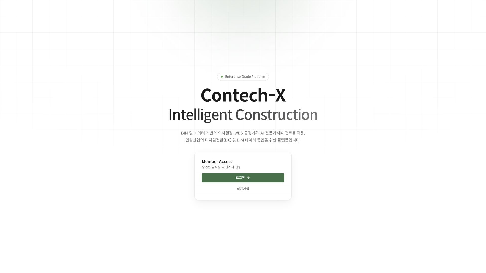
- 1 로그인 — 등록된 계정으로 서비스를 시작합니다.
- 2 회원가입 — 새 계정 등록 화면으로 이동합니다.
2. 로그인
발급받은 사번과 비밀번호를 입력한 뒤 로그인합니다. 사번은 숫자뿐만 아니라 계정에 등록된 값을 그대로 입력해야 합니다.
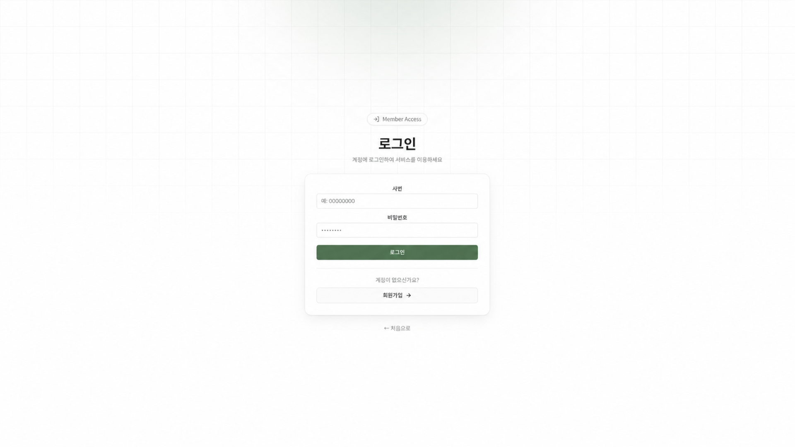
- 1 사번 — 사용자 계정에 등록된 사번을 입력합니다.
- 2 비밀번호 — 계정 비밀번호를 입력합니다.
- 3 로그인 — 입력한 계정으로 인증을 진행합니다.
3. 로그인 후 프로젝트 목록
로그인에 성공하면 프로젝트 목록이 표시됩니다. 좌측 메뉴 또는 프로젝트 카드를 사용해 작업할 현장으로 이동합니다.
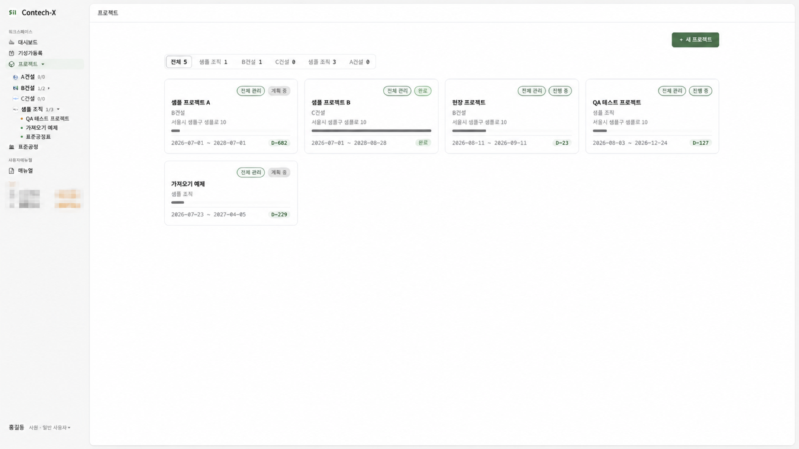
- 1 공통 메뉴 — 대시보드, 기상가동률, 프로젝트, 표준공정, 매뉴얼로 이동합니다.
- 2 조직 필터 — 전체 또는 조직별 프로젝트만 표시합니다.
- 3 프로젝트 카드 — 프로젝트 상태, 기간과 진행 정보를 확인하고 프로젝트를 엽니다.
- 4 새 프로젝트 — 프로젝트 생성 화면을 엽니다. 자세한 방법은 3장에서 설명합니다.
- 5 사용자 메뉴 — 프로필과 계정 기능을 확인합니다.
4. 프로젝트 열기
- 프로젝트 카드 또는 좌측 프로젝트 트리에서 프로젝트를 선택합니다.
- 프로젝트 개요에서 기본 정보와 등록된 공정표를 확인합니다.
- 작업할 공정표 이름을 선택하면 공정표 편집화면으로 이동합니다.
2EPS·프로젝트·공정표 구조
Contech-X는 프로젝트와 공정표를 계층으로 관리합니다. EPS 조직 아래에 프로젝트(PRJ)가 있고, 한 프로젝트 안에는 하나 이상의 공정표를 둘 수 있습니다. WBS와 작업(Activity)은 각 공정표 안에서 작성합니다.
- EPS 조직
- 프로젝트(PRJ)
- 공정표
- WBS·작업
1. 공정표 맵에서 계층 읽기
좌측 메뉴에서 표준공정을 선택하면 라이브러리의 공정표 맵이 열립니다. 이 화면에서 접근 가능한 조직, 프로젝트와 공정표를 한 번에 확인할 수 있습니다.
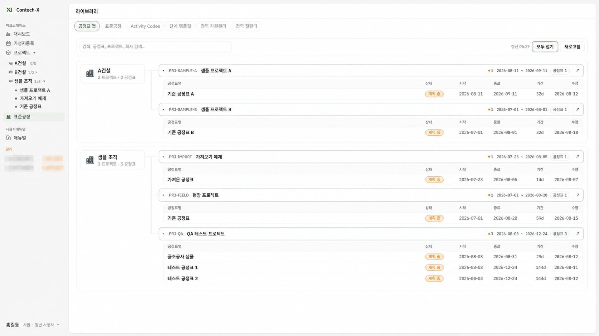
- 1 EPS 조직 — 조직에 포함된 프로젝트 수와 공정표 수를 표시합니다.
- 2 프로젝트(PRJ) — 프로젝트 코드, 이름, 기간과 공정표 수를 확인합니다.
- 3 공정표 — 상태, 시작·종료일, 기간과 수정일을 확인하고 공정표 이름을 선택해 편집화면을 엽니다.
- 4 모두 접기·펼치기 — 모든 프로젝트의 공정표 목록을 한 번에 숨기거나 표시합니다.
2. 각 계층의 역할
| 구분 | 역할 | 화면에서 확인하는 정보 |
|---|---|---|
| EPS 조직 | 접근 가능한 프로젝트를 회사 또는 조직 단위로 묶습니다. | 조직명, 프로젝트 수, 공정표 수 |
| 프로젝트(PRJ) | 실제 현장 또는 사업의 기본 관리 단위이며 여러 공정표를 보관합니다. | 프로젝트 코드·이름, 기간, 상태, 공정표 수 |
| 공정표 | WBS, 작업, 관계, 캘린더와 자원을 작성하고 계산하는 일정 단위입니다. | 공정표명, 상태, 시작·종료일, 기간, 수정일 |
3. 공정표 열기
- 좌측 메뉴에서 표준공정을 선택합니다.
- 라이브러리 상단에서 공정표 맵을 선택합니다.
- 필요하면 모두 펼치기 또는 프로젝트 왼쪽 화살표를 선택합니다.
- 작업할 공정표 이름을 선택해 공정표 편집화면으로 이동합니다.
4. P6와 Contech-X의 구조 차이
| 구분 | P6의 일반적인 운용 | Contech-X |
|---|---|---|
| 공정표 구조 | 프로젝트를 주요 일정 관리 단위로 사용 | 한 프로젝트 안에서 여러 공정표를 함께 운용 |
| 활용 예 | 프로젝트별 기준 공정표 중심 관리 | 전체 공정, 동별 공정, 협력사 공정 등 목적별 공정표 관리 |
3프로젝트·공정표 생성
이 장에서는 새 프로젝트를 만들고, 프로젝트 안에 공정표를 추가한 뒤 편집화면에 진입하는 절차를 순서대로 설명합니다. 공정표 편집화면의 내부 기능은 다루지 않습니다.
- 권한과 준비 정보 확인
- 프로젝트 생성
- 공정표 생성 또는 가져오기
- 공정표 편집화면 진입
3.1 프로젝트 생성 권한과 준비 정보
새 프로젝트 버튼은 프로젝트 전체 관리 권한이 있는 사용자에게 표시됩니다. 생성 전에 배정할 EPS 조직, 프로젝트 이름, 현장 주소, 발주처, 계획 시작일과 종료일을 준비합니다. 시공사는 선택한 EPS 조직의 정보가 자동으로 입력됩니다.
| 구분 | 확인할 내용 |
|---|---|
| 생성 권한 | 시스템 개발·운영자 또는 본사 통합관리자 |
| 필수 정보 | 프로젝트 이름, 프로젝트 시작일, 프로젝트 종료일 |
| 선택 정보 | EPS 조직, 현장 주소, 발주처 |
3.2 새 프로젝트 버튼 선택
좌측 메뉴에서 프로젝트를 연 뒤 화면 오른쪽 위의 + 새 프로젝트를 선택합니다. 버튼이 보이지 않으면 프로젝트 생성 권한을 관리자에게 확인합니다.
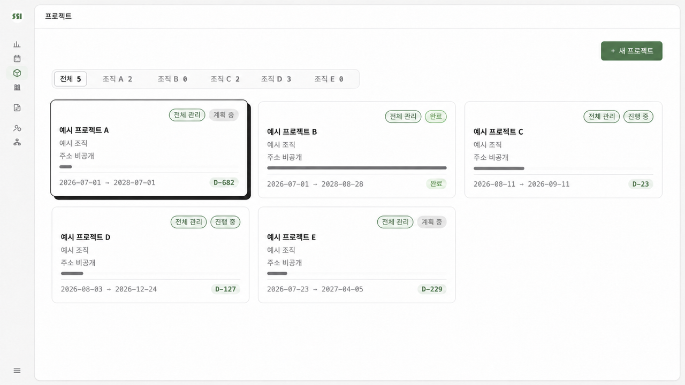
- 1 + 새 프로젝트 — 프로젝트 정보 입력 창을 엽니다.
3.3 프로젝트 기본정보 입력
조직과 프로젝트 기본정보를 입력합니다. 현장 주소는 검색 결과를 선택하면 상세 주소까지 이어서 저장할 수 있습니다. 입력을 마친 뒤 프로젝트 생성을 선택합니다.

- 1 조직·이름 — 배정할 EPS 조직과 프로젝트 이름을 입력합니다.
- 2 현장 정보 — 주소와 발주처를 입력하고 시공사를 확인합니다.
- 3 프로젝트 기간 — 계획 시작일과 종료일을 지정합니다.
- 4 프로젝트 생성 — 입력한 정보로 프로젝트를 만듭니다.
3.4 생성 결과와 프로젝트 개요 확인
생성이 완료되면 프로젝트 개요가 열립니다. 프로젝트 이름·주소·참여 조직·기간을 확인하고, 아래 공정계획 목록에서 등록된 공정표를 관리합니다.
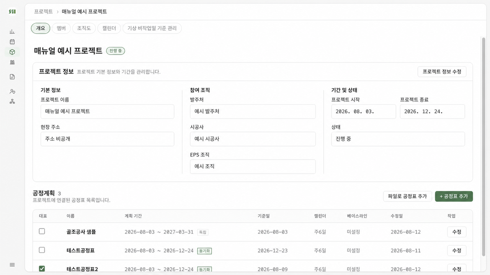
- 1 멤버 — 프로젝트 참여자와 역할을 관리하는 탭입니다.
- 2 프로젝트 정보 — 생성한 기본정보와 기간을 확인합니다.
- 3 공정계획 — 프로젝트에 등록된 공정표를 관리합니다.
3.5 프로젝트 멤버 추가와 역할 지정
공동 작업이 필요하면 멤버 탭에서 사번 또는 이름으로 사용자를 검색하고 역할을 선택한 뒤 추가합니다. 프로젝트 생성 권한과 프로젝트 안에서의 역할은 서로 다른 개념입니다.
| 역할 | 용도 |
|---|---|
| 프로젝트 총괄 | 프로젝트 개설·삭제와 소유권 이양을 포함한 전체 관리 |
| 현장 공정관리 담당자 | 배정 프로젝트의 계획·자원·원가·실적 관리 |
| 현장 실적 입력자 | 현장의 진행 실적 입력과 업데이트 |
| 현장 열람자 | 현장·공정표·보고 대상을 조회 |
3.6 새 공정표 추가
프로젝트 개요의 공정계획 영역에서 + 공정표 추가를 선택하면 목록 아래에 입력 영역이 열립니다.
3.7 공정표 이름·캘린더·계획기간·기준일 설정
공정표 이름과 캘린더를 선택하고 필요하면 메모를 입력합니다. 계획기간 동기화 여부와 기준일을 확인한 뒤 추가를 선택합니다.
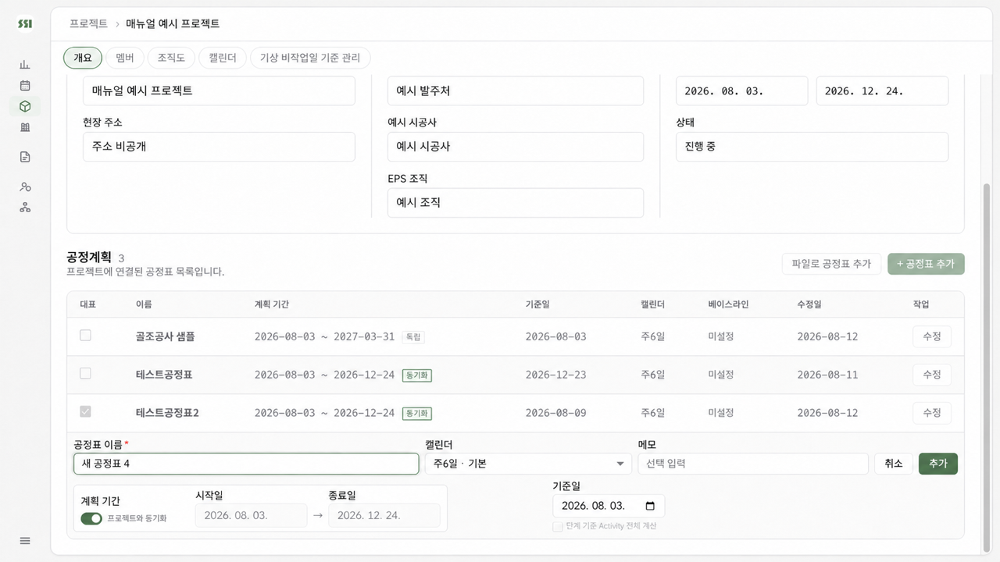
- 1 + 공정표 추가 — 새 공정표 입력 영역을 엽니다.
- 2 이름·캘린더·메모 — 공정표를 구분할 기본정보를 입력합니다.
- 3 계획기간 — 프로젝트 동기화 여부와 시작·종료일을 확인합니다.
- 4 기준일 — 공정 계산과 진도 업데이트의 기준 날짜를 지정합니다.
3.8 프로젝트 기간 동기화와 독립기간 차이
| 기간 방식 | 동작 | 사용 예 |
|---|---|---|
| 프로젝트와 동기화 | 프로젝트 시작·종료일을 공정표 계획기간으로 사용합니다. | 프로젝트 전체 기간을 따르는 기본 공정표 |
| 독립기간 | 공정표만의 시작·종료일을 직접 지정합니다. | 골조, 동별, 협력사 등 별도 범위 공정표 |
3.9 대표 공정표 지정
공정계획 목록의 대표 체크박스로 대표 공정표를 지정합니다. 한 번에 하나만 지정할 수 있으며, 체크를 해제하면 대표 공정표가 없는 상태가 될 수 있습니다.
3.10 기존 공정표 복제
복제할 공정표의 수정을 선택한 뒤 복제를 누릅니다. 기존 공정표의 작업·관계·자원 배정 내용을 새 공정표의 시작점으로 사용할 수 있습니다.
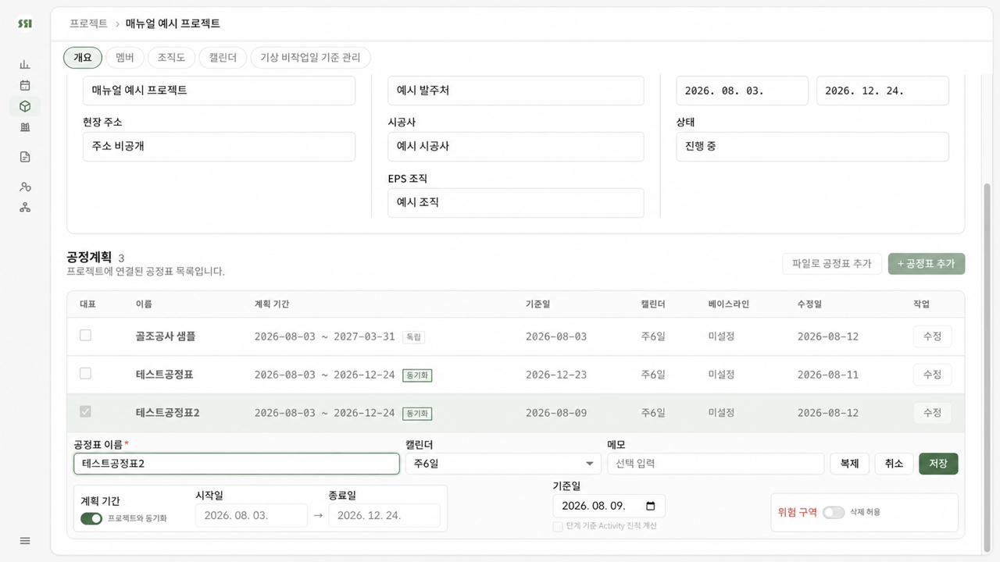
- 1 대표 — 프로젝트의 대표 공정표를 지정합니다.
- 2 수정 — 선택한 공정표의 편집 영역을 엽니다.
- 3 복제 — 현재 공정표를 바탕으로 사본을 만듭니다.
- 4 저장 — 이름·기간·기준일 변경을 저장합니다.
3.11 MS Project XML 가져오기
파일로 공정표 추가를 선택한 뒤 MS Project에서
내보낸 .xml 파일을 지정하고 가져오기를
선택합니다. 가져오기 결과의 요약과 경고를 확인한 뒤 생성된 공정표를
엽니다.
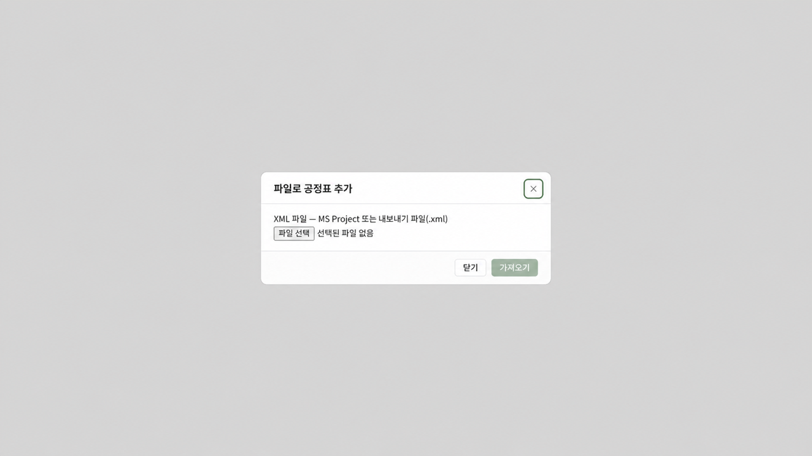
- 1 파일 선택 — MS Project XML 파일을 지정합니다.
- 2 가져오기 — 파일을 분석해 프로젝트 공정표로 생성합니다.
3.12 생성한 공정표 편집화면으로 진입
공정계획 목록에서 공정표 이름을 선택하거나 가져오기 결과에서 공정표 열기를 선택하면 편집화면으로 이동합니다. 상단 경로에서 현재 프로젝트와 공정표 이름을 확인합니다.
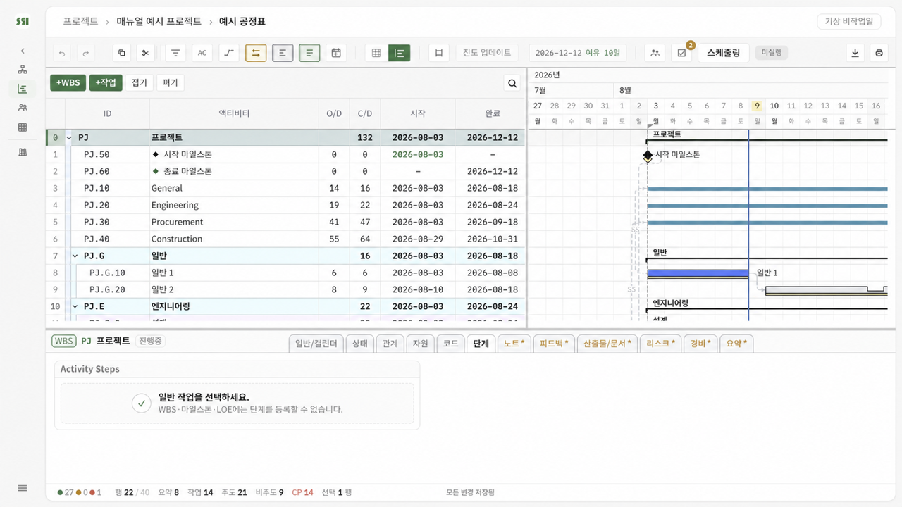
- 1 현재 위치 — 프로젝트와 공정표 이름을 확인합니다.
4조직도 OBS 작성
4.1 OBS의 목적과 적용 범위
Contech-X의 OBS는 현장 조직과 직책, 상·하위 관계를 한눈에 확인하고 보기 좋은 조직도로 정리하는 기능입니다. 프로젝트 권한이나 WBS·작업의 수정 책임을 결정하는 화면은 아닙니다.
| 구분 | 관리하는 내용 |
|---|---|
| OBS | 현장 조직·직책과 상·하위 계층을 조직도로 표시합니다. |
| 프로젝트 멤버 | 프로젝트 사용자와 역할·권한을 관리합니다. |
4.2 프로젝트 조직도 화면 열기
프로젝트를 연 뒤 상단 프로젝트 영역에서 조직도를 선택합니다. 조직도가 열리면 현재 프로젝트의 조직 구조와 선택한 조직 정보를 확인할 수 있습니다.
- 프로젝트 목록에서 작업할 프로젝트를 엽니다.
- 프로젝트 상단의 조직도 탭을 선택합니다.
- 프로젝트 조직도 화면이 표시되는지 확인합니다.
4.3 조직도 화면 구성
조직도 화면은 상단 명령 영역, 가운데 조직도 영역, 오른쪽 조직 정보 영역으로 구성됩니다. 조직 박스를 선택하면 오른쪽에서 해당 조직의 경로·상위 조직·하위 조직·조직 코드를 확인합니다.
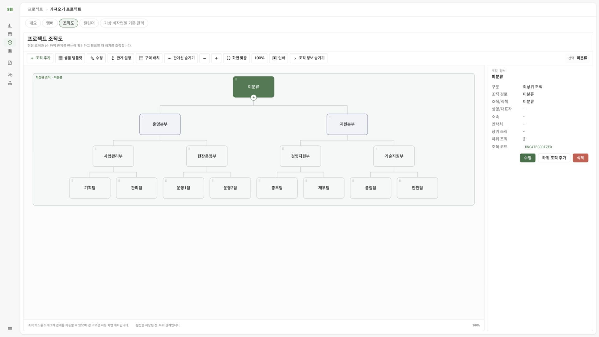
- 1 조직도 탭 — 프로젝트 조직도 화면을 엽니다.
- 2 상단 명령 — 조직 추가·수정·관계·배치·보기·인쇄 기능을 실행합니다.
- 3 조직도 — 조직의 상·하위 계층과 관계선을 확인합니다.
- 4 조직 정보 — 선택 조직의 경로·상위·하위 조직과 코드를 확인합니다.
4.4 조직 직접 추가
조직을 추가할 위치의 상위 조직을 먼저 선택한 뒤 조직 추가를 선택합니다. 새 조직 입력 상자가 나타나면 조직 또는 직책 이름을 입력하고 생성을 선택합니다.
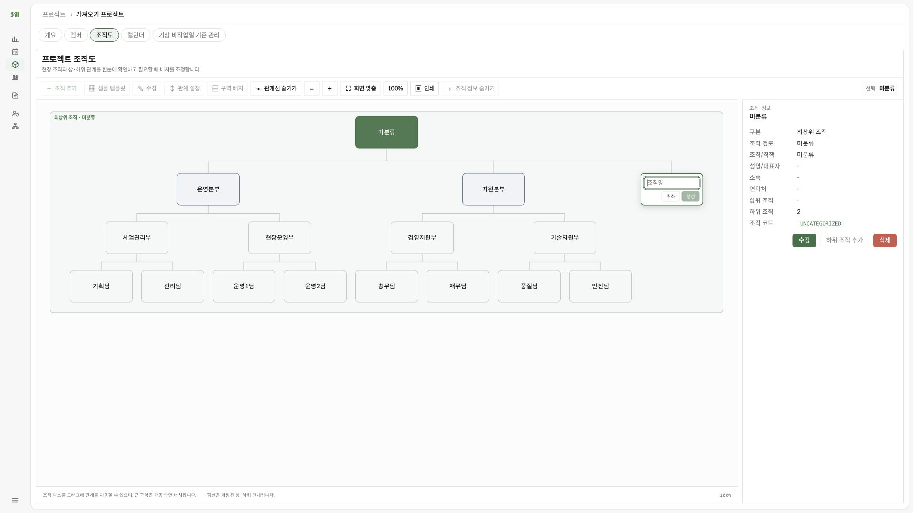
- 1 조직 추가 — 선택 조직 아래에 새 조직 입력 상자를 엽니다.
- 2 상위 조직 — 새 조직이 소속될 부모 조직입니다.
- 3 새 조직 — 이름을 입력한 뒤 생성하거나 취소합니다.
4.5 샘플 템플릿 적용
기본 조직도를 빠르게 구성하려면 샘플 템플릿을 선택합니다. 적용 대상과 생성될 계층, 조직 수를 확인한 뒤 샘플 템플릿 적용을 선택합니다.
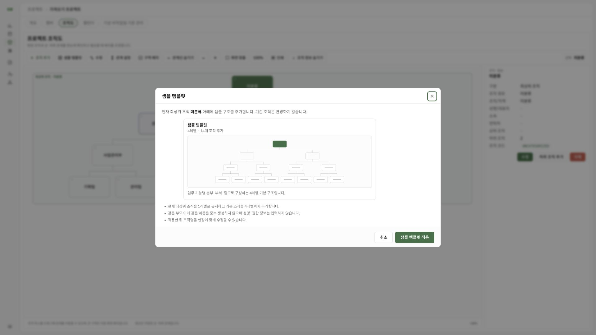
- 1 샘플 템플릿 — 템플릿 확인 창을 엽니다.
- 2 적용 대상 — 템플릿이 추가될 최상위 조직을 확인합니다.
- 3 미리보기 — 생성될 계층과 조직 수를 확인합니다.
- 4 취소·적용 — 창을 닫거나 템플릿 조직을 생성합니다.
4.6 조직 정보 수정
수정할 조직을 선택하고 상단 또는 오른쪽의 수정을 선택합니다. 조직 또는 직책 이름과 대표자, 소속, 연락처를 확인하고 필요한 항목을 변경한 뒤 저장을 선택합니다.
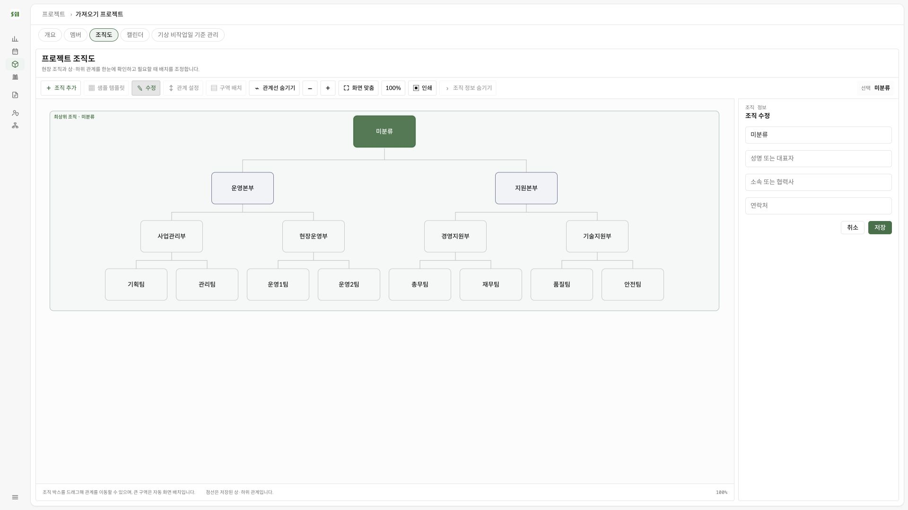
- 1 선택 조직 — 정보를 수정할 조직을 선택합니다.
- 2 수정 — 오른쪽에 조직 정보 입력 영역을 엽니다.
- 3 조직 정보 — 조직명·대표자·소속·연락처를 입력합니다.
- 4 취소·저장 — 변경을 버리거나 서버에 저장합니다.
4.7 조직 관계 설정
관계 설정에서는 조직을 추가·수정·삭제하고 상·하위 계층과 같은 계층 안의 표시 순서를 조정합니다. 왼쪽 조직 목록에서 대상을 선택한 뒤 상단의 조직 또는 배치 명령을 사용합니다.
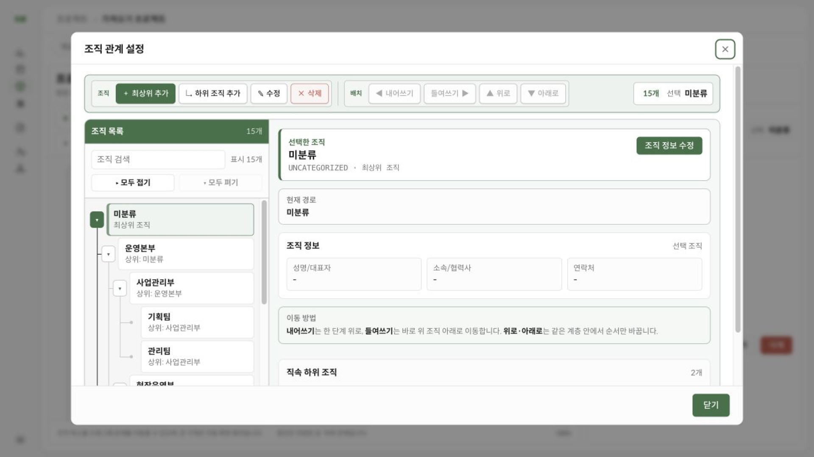
- 1 조직 명령 — 최상위·하위 조직 추가, 수정, 삭제를 실행합니다.
- 2 배치 명령 — 내어쓰기·들여쓰기와 위·아래 순서 이동을 실행합니다.
- 3 조직 목록 — 조직을 검색하고 계층을 접거나 펼쳐 대상을 선택합니다.
- 4 선택 조직 — 현재 경로·조직 정보·직속 하위 조직을 확인합니다.
| 명령 | 동작 |
|---|---|
| 내어쓰기 | 선택 조직을 한 단계 위 계층으로 이동합니다. |
| 들여쓰기 | 선택 조직을 바로 위 조직의 하위로 이동합니다. |
| 위로·아래로 | 같은 상위 조직 아래에서 표시 순서만 바꿉니다. |
4.8 조직도 구역 배치
조직도가 넓게 펼쳐질 때 구역 배치를 사용하면 최상위 조직의 직속 하위 조직을 여러 구역으로 나누어 표시할 수 있습니다. 하위 조직은 자신의 전체 하위 트리와 함께 이동합니다.
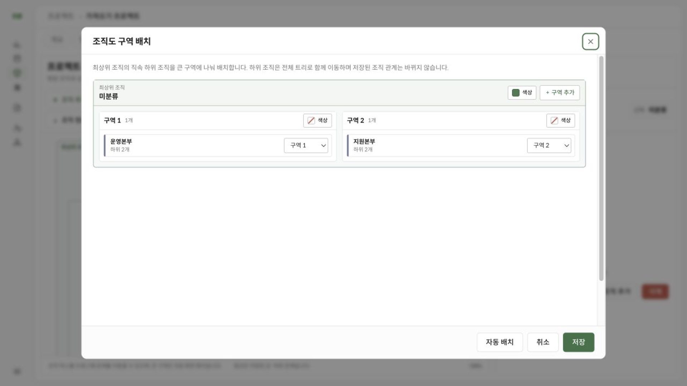
- 1 최상위 조직 — 조직 색상을 정하고 새 구역을 추가합니다.
- 2 구역별 조직 — 각 직속 하위 조직의 구역과 구역 색상을 지정합니다.
- 3 배치 명령 — 자동 배치로 복원하거나 취소·저장합니다.
5WBS 생성, WBS 노드 인터페이스
5.1 WBS의 목적과 Activity 구분
WBS(Work Breakdown Structure)는 공정표를 관리 가능한 범위로 나누는 계층 구조입니다. WBS는 공정의 묶음과 위치를 정하고, Activity는 그 아래에서 기간·날짜·관계·자원을 갖는 실제 일정 계산 대상입니다.
| 구분 | 역할 | 예시 |
|---|---|---|
| WBS | 공정 범위를 계층으로 분류하고 작업을 담습니다. | 프로젝트 > 시공 > 지하공사 |
| Activity | 기간과 날짜를 갖고 스케줄링되는 실제 작업입니다. | 지하 1층 벽체 철근 배근 |
5.2 WBS 화면 열기
프로젝트에서 작업할 공정표를 연 뒤 좌측 메뉴의 WBS를 선택합니다. WBS 화면이 열리면 현재 프로젝트와 공정표 이름을 상단 경로에서 확인합니다.
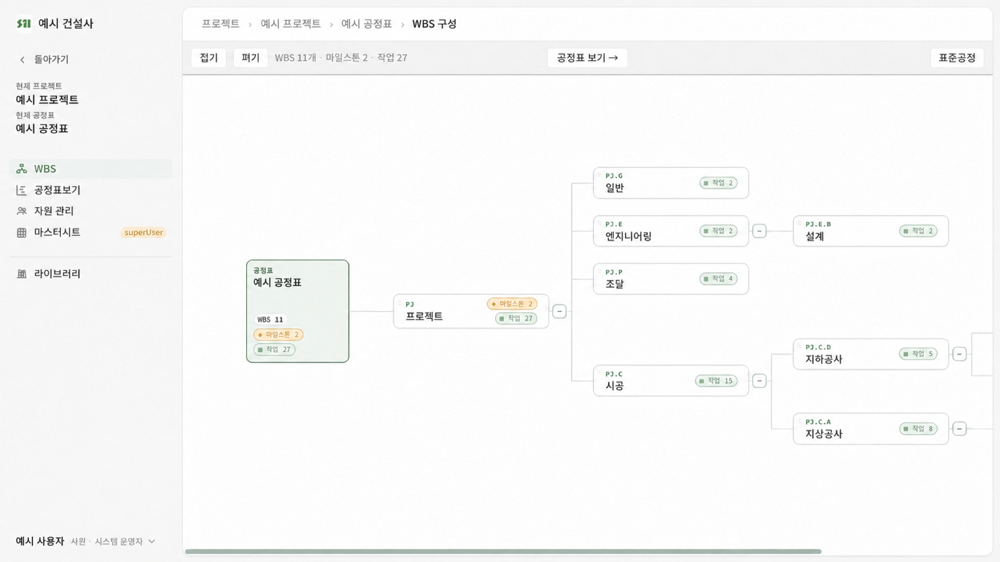
- 1 WBS 메뉴 — 현재 공정표의 WBS 구성 화면을 엽니다.
- 2 상단 명령 — 접기·펴기, 선택, 복사와 공정표 화면 전환을 실행합니다.
- 3 공정표 요약 — WBS·마일스톤·작업 수를 한눈에 확인합니다.
- 4 WBS 노드 — 코드·이름·하위 작업 수와 계층을 확인합니다.
5.3 WBS 화면과 노드 정보
공정표 요약 카드 오른쪽에 WBS 노드가 계층으로 연결됩니다. 각 노드에는 WBS 코드와 이름, 해당 WBS 아래의 작업·마일스톤 수가 표시됩니다. 노드를 선택하면 테두리가 강조되고 편집 명령이 나타납니다.
| 화면 요소 | 의미와 동작 |
|---|---|
| 코드·이름 | WBS를 식별하는 코드와 사용자에게 표시되는 이름입니다. |
| 작업·마일스톤 수 | 현재 WBS와 하위 계층에 포함된 항목 수를 집계합니다. |
| + | 선택 WBS 아래에 하위 WBS를 추가합니다. |
| − / + | 해당 WBS의 하위 계층을 접거나 펼칩니다. |
| × | 선택 WBS와 하위 범위의 삭제 확인 창을 엽니다. |
5.4 최상위·하위 WBS 추가
공정표 요약 카드의 +를 선택하면 최상위 WBS가, 일반 WBS 노드의 +를 선택하면 선택 노드 아래에 하위 WBS가 추가됩니다. 새 노드는 임시 코드와 새 WBS 이름으로 만들어집니다.
- 새 WBS가 들어갈 상위 위치를 확인합니다.
- 최상위 또는 해당 노드의 +를 선택합니다.
- 생성된 노드의 코드와 이름을 현장 기준에 맞게 수정합니다.
5.5 WBS 코드·이름 수정
노드의 코드 또는 이름을 선택해 내용을 수정합니다. 입력을 마친 뒤 Enter를 누르거나 입력 영역 밖을 선택하면 변경이 확정되고 자동 저장됩니다.
- 코드는 같은 공정표 안에서 중복되지 않게 입력합니다.
- 이름은 작업 범위를 바로 이해할 수 있는 공종·구역 기준으로 작성합니다.
- 상위 코드 변경 시 하위 코드가 함께 조정될 수 있으므로 저장 결과를 확인합니다.
5.6 접기·펴기와 캔버스 이동
상단의 접기와 펴기는 전체 WBS 계층을 한 번에 접거나 펼칩니다. 노드 옆의 − / +는 해당 노드의 하위 계층만 제어합니다.
- 빈 캔버스를 드래그해 넓은 조직도를 좌우·상하로 이동합니다.
- 하단 가로 스크롤을 사용해 화면 밖의 하위 WBS를 확인합니다.
- 큰 계층은 먼저 전체를 접은 뒤 필요한 가지부터 펼치면 찾기 쉽습니다.
5.7 단일·다중 선택
노드를 일반 선택하면 기존 선택을 지우고 한 개만 선택합니다. 여러 노드를 선택하려면 macOS에서는 Command, Windows·Linux에서는 Ctrl을 누른 채 노드를 선택합니다. Shift도 개별 노드의 선택 추가·해제에 사용할 수 있습니다.
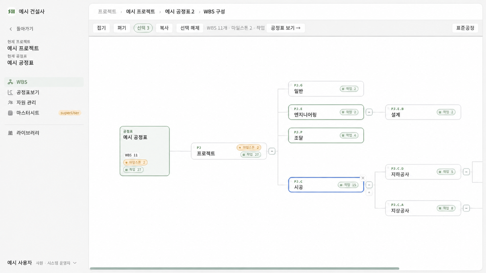
- 1 선택 수·복사·선택 해제 — 선택 개수를 확인하고 일괄 명령을 실행합니다.1. ctrl + 마우스 클릭으로 다중 선택 가능2. 복사 버튼을 누른 후 ctrl + v로 선택된 노드와 같은 레벨에 붙여넣기 가능
- 2 선택 노드 — 선택된 WBS는 파란색 테두리로 구분됩니다.
- 3 노드 명령 — 선택 노드의 삭제(x)·접기(-)·하위 추가(+)를 실행합니다.
5.8 드래그로 계층·순서 이동
이동할 WBS를 선택해 대상 노드로 드래그합니다. 놓는 위치에 따라 같은 계층의 순서 또는 상·하위 관계가 달라집니다.
| 놓는 위치 | 결과 |
|---|---|
| 대상 노드 위쪽 | 대상과 같은 계층에서 대상 앞에 배치합니다. |
| 대상 노드 가운데 | 대상의 하위 WBS로 이동합니다. |
| 대상 노드 아래쪽 | 대상과 같은 계층에서 대상 뒤에 배치합니다. |
| 공정표 요약·빈 최상위 영역 | 최상위 WBS로 이동합니다. |
5.9 WBS 하위 트리 복사·붙여넣기
반복되는 WBS 구조는 하위 작업과 함께 복사할 수 있습니다. 복사할 WBS를 하나 이상 선택하고 상단 복사 또는 Command/Ctrl+C를 사용합니다. 붙여넣을 위치의 기준 WBS를 선택한 뒤 Command/Ctrl+V를 누르면 선택 WBS와 같은 계층의 뒤쪽에 사본이 추가됩니다.
- 복사할 WBS를 선택하고 선택 수를 확인합니다.
- 복사를 선택합니다.
- 같은 계층에서 바로 앞에 둘 기준 WBS를 선택한 뒤 Command/Ctrl+V를 누릅니다.
- 새 코드와 계층, 복사된 작업 수를 확인합니다.
5.10 삭제와 영향 범위 확인
삭제할 노드를 선택하고 노드의 × 또는 Delete 키를 사용합니다. 확인 창에는 삭제될 WBS와 하위 WBS, 작업·마일스톤 수가 표시됩니다.
| 확인 항목 | 의미 |
|---|---|
| WBS 수 | 선택 노드와 그 아래에서 함께 삭제될 WBS 범위입니다. |
| 작업·마일스톤 수 | 삭제 WBS에 포함되어 함께 제거될 일정 항목 수입니다. |
| 취소 | 아무 내용도 변경하지 않고 확인 창을 닫습니다. |
| 삭제 확인 | 확정 후 자동 저장이 실행되어 서버에 반영됩니다. |
5.11 WBS 직속 작업 목록
WBS 노드를 더블클릭하면 이동 가능한 WBS 직속 작업 목록이 열립니다. 이 목록은 선택 WBS에 바로 소속된 작업과 마일스톤만 보여주며, 하위 WBS의 작업은 포함하지 않습니다.
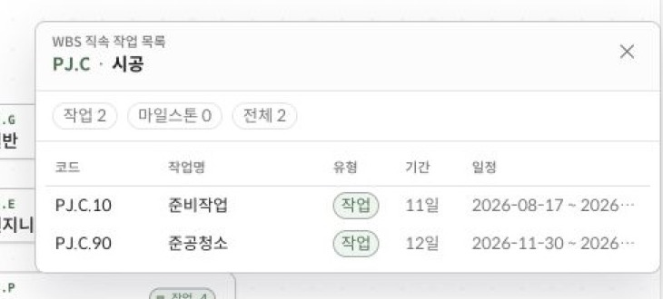
- 1 집계 — 직속 작업·마일스톤과 전체 수를 표시합니다.
- 2 작업 목록 — 코드·작업명·유형·기간·일정을 확인합니다.
5.12 표준공정 모듈 불러오기
반복되는 표준 WBS·작업 묶음은 오른쪽 표준공정 패널에서 불러옵니다. 먼저 배치 기준이 될 WBS를 선택하고 모듈의 코드·이름·Activity 수를 확인합니다.
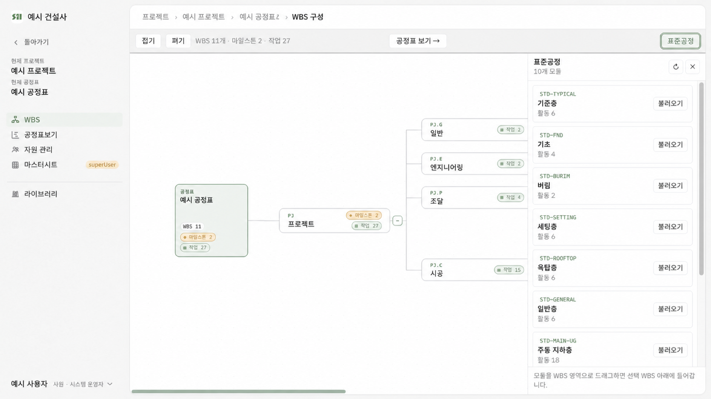
- 1 표준공정 — 모듈 패널을 열거나 닫습니다.
- 2 모듈 목록 — 코드·이름과 포함 Activity 수를 확인합니다.
- 3 불러오기 — 선택 WBS를 기준으로 모듈을 같은 계층 뒤에 추가합니다.
- 모듈을 배치할 기준 WBS를 선택합니다.
- 표준공정을 열고 사용할 모듈을 찾습니다.
- 같은 계층 뒤에 추가하려면 불러오기를 선택하고, 특정 WBS 아래에 넣으려면 모듈을 해당 WBS 영역으로 드래그합니다.
- 추가된 WBS 코드·이름·작업 수와 배치 위치를 확인합니다.
5.13 자동 저장과 읽기 전용
WBS 추가·이름 변경·이동·복사·삭제와 표준공정 불러오기는 변경 직후 자동 저장됩니다. 별도의 저장 버튼을 찾기보다 작업을 마친 뒤 저장이 완료될 시간을 두고 다음 화면으로 이동합니다.
| 상태 | 동작 |
|---|---|
| 편집 가능 | 추가·수정·이동·복사·삭제·표준공정 불러오기를 사용할 수 있습니다. |
| 읽기 전용 | WBS 구조와 집계는 볼 수 있지만 변경 명령은 비활성화되거나 표시되지 않습니다. |
| 저장 실패 | 화면을 이동하지 말고 연결 상태를 확인한 뒤 다시 시도합니다. |
5.14 공정표로 돌아가기와 두 화면의 역할
WBS 구성이 끝나면 상단의 공정표 보기를 선택해 액티비티 표와 Gantt Chart로 이동합니다.
| 화면 | 주요 용도 |
|---|---|
| WBS 화면 | 공정 범위의 계층, 코드·이름, 배치와 하위 작업 수를 관리합니다. |
| 공정표 보기 | Activity의 기간·날짜·관계·자원과 Gantt Chart를 편집합니다. |
6작업 Activity
이 장에서는 Activity를 추가하고 기본정보와 상태를 편집하는 방법, Activity Code와 단계를 연결하는 방법을 설명합니다. 작업간 관계는 7장, 마일스톤은 8장, 캘린더는 9장에서 별도로 설명합니다.
| 구분 | WBS | Activity |
|---|---|---|
| 역할 | 공정 범위와 상·하위 계층을 구성합니다. | 실제 수행 작업과 일정 계산 정보를 관리합니다. |
| 기간·날짜 | 하위 Activity 결과를 집계합니다. | 작업일·시작·완료·여유를 가집니다. |
| 편집 위치 | 5장의 WBS 화면에서 구조를 편집합니다. | 공정표 보기의 표와 하단 상세 패널에서 편집합니다. |
6.1 Activity와 WBS의 역할 구분
- 먼저 WBS로 공정의 범위와 계층을 만듭니다.
- 해당 WBS 아래에 실제 수행 작업인 Activity를 배치합니다.
- Activity의 기간·캘린더·관계와 필요한 상세정보를 입력합니다.
- 스케쥴링한 뒤 계산된 시작·완료·여유를 확인합니다.
6.2 공정표 화면과 Activity 선택
공정표 화면은 왼쪽 WBS·Activity 표, 오른쪽 Gantt Chart, 아래쪽 작업 상세 패널로 구성됩니다. 표의 Activity 행 또는 Gantt Bar를 선택하면 같은 작업이 선택되고 하단에 상세정보가 표시됩니다.
- 1 WBS·Activity 표 — ID·이름·기간·날짜를 행 단위로 확인하고 선택합니다.
- 2 Gantt Chart — 작업 기간과 관계, 일정 위치를 시각적으로 확인합니다.
- 3 작업 상세 — 선택한 Activity의 일반·상태·관계·자원·코드·단계를 편집합니다.
6.3 Activity 추가 경로
Activity를 추가할 WBS 또는 기존 Activity를 먼저 선택합니다. 상단의 +작업을 누르면 선택 위치를 기준으로 새 작업 행이 즉시 만들어집니다. 행을 우클릭하면 위·아래 위치를 지정해 작업을 추가하거나 LOE를 추가할 수 있습니다.
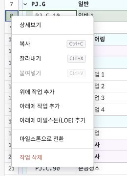
- 1 추가 위치 — 선택 행 위·아래에 Activity를 만들거나 아래에 LOE를 추가합니다.
- 2 전환·삭제 — 일반 작업을 마일스톤으로 바꾸거나 선택 작업을 삭제합니다.
6.4 추가된 기본 행 편집
새 Activity를 선택한 뒤 일반/캘린더 탭에서 기본정보를 입력합니다. 상속 ID는 소속 WBS에서 가져오며 사용자는 뒤쪽 ID와 이름을 지정합니다. 유형·설정·진척 유형, 캘린더와 책임 매니저도 이 화면에서 확인합니다.
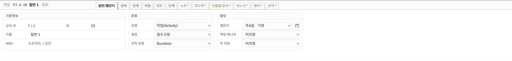
- 1 기본정보 — 상속 ID·개별 ID·이름·소속 WBS를 확인합니다.
- 2 분류 — Activity 유형, 기간 계산 설정, 진척 유형을 선택합니다.
- 3 할당 — 캘린더·책임 매니저·주 자원을 지정합니다.
6.5 WBS 집계 행과 Activity 결과 구분
굵은 WBS 행의 기간과 날짜는 하위 Activity 결과를 집계한 값입니다. 실제 작업 정보를 입력할 때는 WBS가 아닌 Activity 행을 선택합니다. WBS를 선택하면 Activity 전용 탭이나 편집 명령이 제한될 수 있습니다.
| 화면 표시 | 의미 | 편집 원칙 |
|---|---|---|
| 굵은 WBS 행 | 하위 작업의 시작·완료·기간을 집계한 요약 | 5장의 WBS 화면에서 구조를 편집합니다. |
| Activity 행 | 실제 일정 계산 대상 | 공정표와 하단 상세 패널에서 정보를 편집합니다. |
6.6 임시 등록과 공통 저장
Activity 추가·수정·삭제는 먼저 화면의 변경 상태에 반영됩니다. 작업이 끝나면 공통 저장을 실행하고 화면 아래의 저장 상태가 모든 변경 저장됨인지 확인합니다. 저장 전에는 실행 취소와 다시 실행으로 최근 변경을 되돌리거나 복원할 수 있습니다.
6.7 Activity ID·이름·WBS 편집
Activity ID는 상속 ID + 개별 ID로 표시됩니다. 이름은 작업자가 이해하기 쉬운 실제 수행 작업명으로 입력합니다. 소속 WBS를 바꿔야 할 때는 복사·잘라내기·붙여넣기 또는 WBS 편집 흐름을 사용하고, 변경 후 전체 ID와 계층 위치를 다시 확인합니다.
6.8 Activity 유형
| 유형 | 용도 | 기간 |
|---|---|---|
| 작업(Activity) | 기간을 가진 일반 수행 작업 | 1일 이상 |
| 마일스톤 시작 | 착수·승인 등 시작 시점 표시 | 0일 |
| 마일스톤 종료 | 완료·인계 등 종료 시점 표시 | 0일 |
| 마일스톤(LOE) | 다른 작업 기간에 걸친 지원·관리 범위 표시 | 관계에 따라 결정 |
6.9 기간과 계산 설정
일반 Activity는 작업일과 캘린더를 기준으로 시작·완료를 계산합니다. 일수고정은 작업 기간을 중심으로 관리하며, 자원 중심 계산이 필요한 경우 자원 관련 설정을 사용합니다. 자원과 작업량을 함께 적용할 때는 13장과 14장의 자원 설명을 먼저 확인합니다.
6.10 하단 작업 상세 패널
하단 패널은 선택한 Activity의 세부정보를 탭별로 나눠 보여줍니다. 패널 위쪽 경계를 드래그해 높이를 조절할 수 있습니다.
| 탭 | 주요 내용 | 관련 장 |
|---|---|---|
| 일반/캘린더 | ID·이름·유형·캘린더·담당자 | 6장·9장 |
| 상태 | 작업일·남은 일수·계획/실적 날짜·진척 | 6.11·13장 |
| 관계 | 선행·후행 관계와 Lag | 7장 |
| 자원 | 인력·장비·자재 배정 | 13장 |
| 코드·단계 | 분류값과 작업 세부 단계 | 6.12·6.13 |
6.11 상태와 진척 확인
상태 탭에서 작업일·진행 일수·남은 일수·여유와 계획/실적 날짜를 확인합니다. 실적 시작·완료 여부와 날짜를 입력하면 현재 진척 상태가 갱신됩니다.
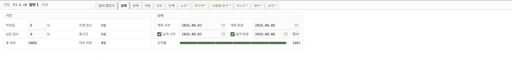
- 1 기간 — 작업일·진행·남은 일수와 총/자유 여유를 확인합니다.
- 2 상태 — 계획·실적 날짜와 진척률을 확인하고 업데이트합니다.
6.12 Activity Code 부여
코드 탭에서 할당을 선택하고 Global, EPS, Project 범위를 고른 뒤 Activity Code 유형과 Code Value를 선택합니다. 할당된 코드는 분류·그룹·정렬·필터의 기준으로 사용할 수 있습니다.
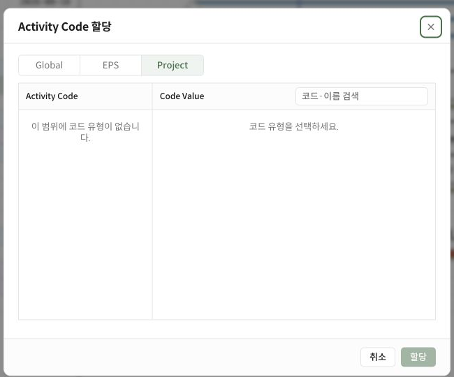
- 1 범위 — Global·EPS·Project 중 사용할 Code 사전을 선택합니다.
- 2 코드 선택 — Activity Code 유형과 계층형 Code Value를 찾습니다.
- 3 할당 — 선택값을 Activity에 연결합니다.
6.13 단계와 템플릿
단계 탭에서 Activity를 더 작은 수행 단계로 나눌 수 있습니다. 단계명·설명·순서·가중치를 직접 입력하거나 저장된 템플릿을 현재 단계 뒤에 추가합니다.
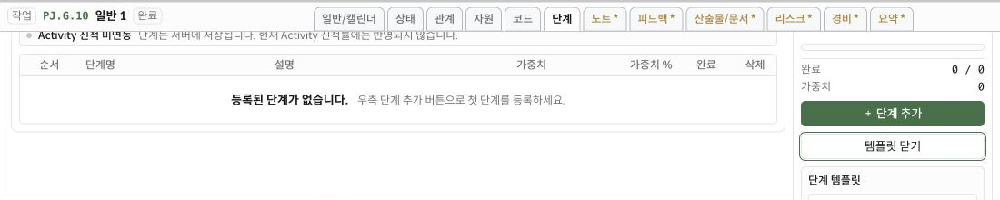
- 1 단계 목록 — 단계명·설명·가중치·완료 여부를 관리합니다.
- 2 추가·템플릿 — 단계를 직접 추가하거나 템플릿을 선택해 일괄 추가합니다.
6.14 수정·삭제·저장 완료 확인
- 수정할 Activity를 선택하고 표 또는 하단 상세 패널에서 값을 변경합니다.
- 삭제가 필요하면 행 메뉴의 작업 삭제를 선택하고 대상을 다시 확인합니다.
- 실수한 변경은 저장 전에 실행 취소로 되돌립니다.
- 공통 저장을 실행하고 모든 변경 저장됨을 확인합니다.
- 표의 ID·이름·기간과 Gantt Bar가 의도한 위치인지 최종 확인합니다.
7작업간 관계설정
이 장에서는 Activity 사이의 선행·후행 관계를 만들고, 관계 유형과 Lag를 조정한 뒤 저장 결과를 확인하는 방법을 설명합니다. 관계를 설정한 뒤 일정 계산을 실행하는 방법은 10. CPM 스케줄링에서 다룹니다.
- 기준 Activity 선택
- 관계 탭 열기
- 관계 추가·편집
- 검증 후 저장
7.1 관계 설정의 목적과 기본 용어
관계는 Activity의 실행 순서를 정의합니다. 현재 선택한 Activity를 기준으로 먼저 수행되는 작업은 선행 작업, 뒤에 수행되는 작업은 후행 작업입니다.
| 용어 | 의미 |
|---|---|
| 현재 Activity | 관계를 확인하거나 편집하기 위해 선택한 기준 작업 |
| 선행 작업 | 현재 Activity보다 앞에 연결되는 작업 |
| 후행 작업 | 현재 Activity보다 뒤에 연결되는 작업 |
| Lag / Lead | 두 작업 사이에 두는 대기 시간 또는 겹쳐 수행하는 시간 |
7.2 관계 탭 열기
- 공정표에서 관계를 확인할 Activity 행을 선택합니다.
- 화면 아래 상세 영역에서 관계 탭을 엽니다.
- 선택한 작업의 선행 작업과 후행 작업이 표시되는지 확인합니다.
7.3 관계 화면 구성
관계 탭은 표 형식의 Grid와 연결 흐름을 보여주는 Flow로 전환할 수 있습니다. Grid에서는 관계 유형과 Lag를 직접 확인하고 편집하며, Flow에서는 현재 Activity 앞뒤의 흐름을 한눈에 확인합니다.
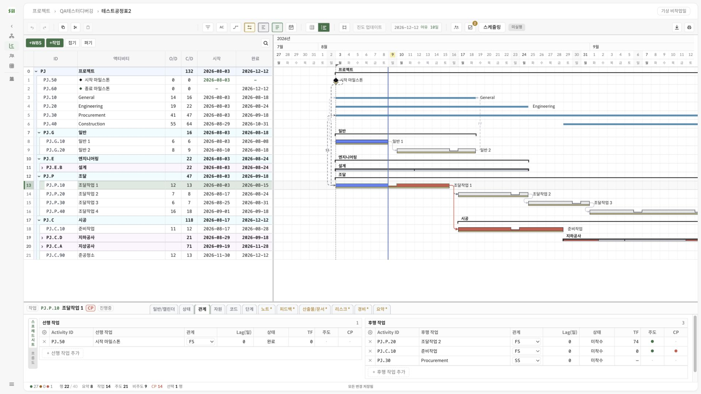
- 1 관계 탭 — 선택한 Activity의 관계를 엽니다.
- 2 Grid·Flow — 표와 흐름 보기 방식을 바꿉니다.
- 3 선행 작업 — 현재 작업보다 앞선 관계를 관리합니다.
- 4 후행 작업 — 현재 작업보다 뒤의 관계를 관리합니다.
7.4 관계 방향 이해하기
| 선택 위치 | 만들어지는 방향 | 확인 방법 |
|---|---|---|
| 선행 작업 추가 | 선택한 작업 → 현재 Activity | Grid의 선행 작업 목록에 표시 |
| 후행 작업 추가 | 현재 Activity → 선택한 작업 | Grid의 후행 작업 목록에 표시 |
7.5 관계 유형 선택
| 유형 | 뜻 | 사용 예 |
|---|---|---|
| FS | Finish to Start. 선행 작업 종료 후 후행 작업 시작 | 철근 배근 완료 후 콘크리트 타설 시작 |
| SS | Start to Start. 선행 작업 시작과 후행 작업 시작 연결 | 먹매김 시작 후 자재 양중 준비 시작 |
| FF | Finish to Finish. 두 작업의 완료 시점 연결 | 시공 완료와 검측 완료 시점 연결 |
| SF | Start to Finish. 선행 작업 시작과 후행 작업 완료 연결 | 현재 화면에서는 생성하지 않음 |
7.6 선행 작업 추가
Grid의 선행 작업 영역에서 추가 행을 열고, 현재 Activity보다 먼저 수행할 작업을 선택합니다.
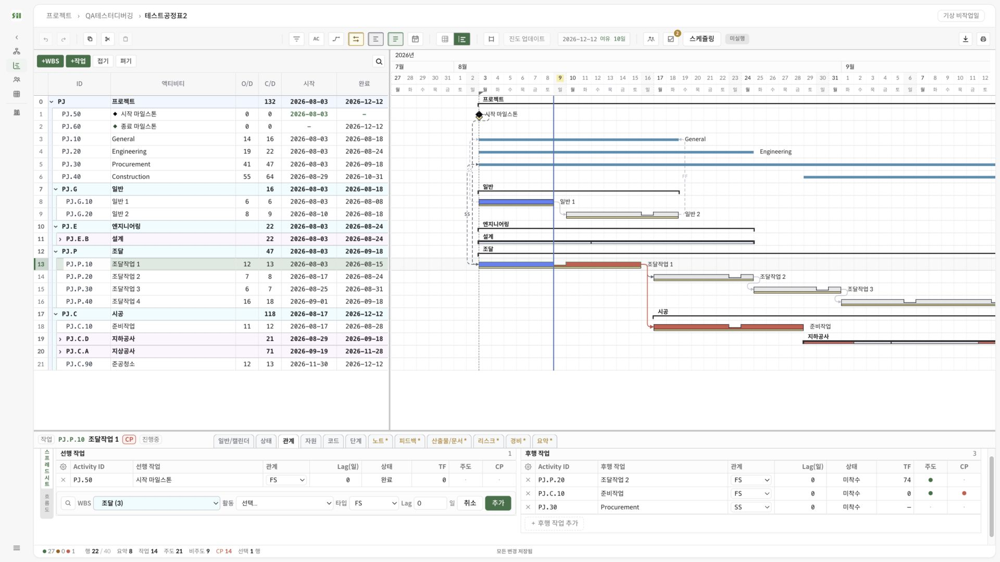
- 1 추가 영역 — 선행 작업 입력 행을 확인합니다.
- 2 WBS·Activity — 찾을 범위와 작업을 선택합니다.
- 3 유형·Lag·추가 — 관계 조건을 정하고 추가합니다.
- 선행 작업 영역에서 추가를 선택합니다.
- WBS를 선택한 뒤 목록 또는 검색으로 Activity를 찾습니다.
- 관계 유형과 Lag를 입력하고 추가를 선택합니다.
- Grid에 새 관계가 표시되는지 확인합니다.
7.7 후행 작업 추가
후행 작업 영역에서 같은 방식으로 작업을 선택하면 현재 Activity 뒤에 관계가 연결됩니다. 선택 대상과 현재 Activity의 순서를 다시 확인한 뒤 추가합니다.
- 후행 작업 영역의 추가를 선택합니다.
- 연결할 WBS와 Activity를 선택합니다.
- FS, SS, FF 중 관계 유형과 Lag를 지정합니다.
- 후행 작업 Grid와 Gantt 관계선에서 결과를 확인합니다.
7.8 Gantt Bar에서 관계 연결
Gantt Bar의 연결점을 드래그하면 표를 거치지 않고 두 Activity를 연결할 수 있습니다. 시작점과 끝점을 어느 연결점에서 잡는지에 따라 관계 유형이 달라지므로, 생성 후 관계 탭에서 유형을 확인합니다.
| 드래그 방향 | 관계 유형 |
|---|---|
| 선행 작업 종료점 → 후행 작업 시작점 | FS |
| 선행 작업 시작점 → 후행 작업 시작점 | SS |
| 선행 작업 종료점 → 후행 작업 종료점 | FF |
7.9 여러 하위 작업을 순서대로 FS 연결
같은 WBS 아래의 여러 Activity를 현재 표시 순서대로 연결하려면 WBS 행 메뉴의 일괄 연결 기능을 사용합니다.
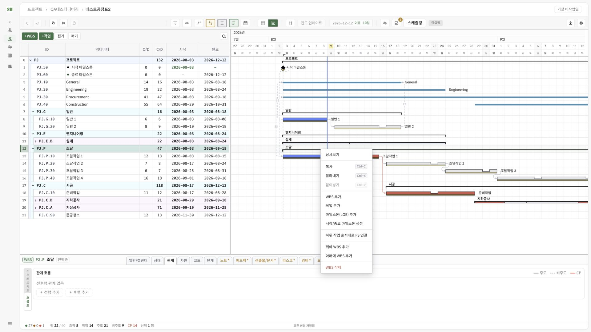
- 1 대상 WBS — 연결할 하위 작업이 있는 행을 선택합니다.
- 2 행 메뉴 — WBS 행의 명령 목록을 엽니다.
- 3 순서대로 FS 연결 — 표시 순서대로 관계를 만듭니다.
7.10 Lag와 Lead 설정
| 입력값 | 의미 | 예 |
|---|---|---|
| 0 | 별도 간격 없이 관계 유형에 따라 연결 | FS 0일 |
| 양수 | 두 작업 사이에 대기 시간 추가 | FS +2일 |
| 음수 | 후행 작업을 앞당겨 겹쳐 수행하는 Lead | FS -1일 |
7.11 기존 관계 편집
Grid의 관계 유형·Lag를 직접 바꾸거나 Gantt 관계선을 선택해 편집 창을 엽니다. 변경 후 적용을 선택합니다.
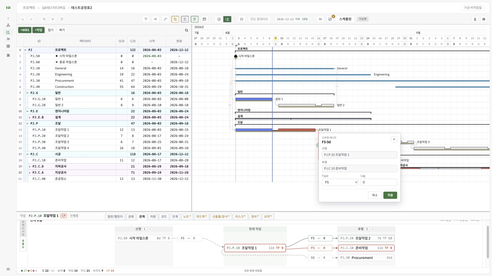
- 1 관계 편집 — 선택한 관계의 정보를 확인합니다.
- 2 Type·Lag — 관계 유형과 간격을 수정합니다.
- 3 적용 — 변경 내용을 현재 편집 상태에 반영합니다.
7.12 관계 삭제
Grid 행의 삭제 버튼 또는 Gantt 관계선 메뉴의 삭제를 사용합니다. 확인 창에서 대상 선행·후행 Activity가 맞는지 확인한 뒤 삭제합니다.
7.13 관계 흐름과 관계선 읽기
Flow 보기에서는 선행 작업, 현재 Activity, 후행 작업이 열로 구분됩니다. 작업 상자 사이의 관계 조건에는 관계 유형과 Lag가 표시되며, Gantt 관계선은 작업 사이의 연결 방향을 보여줍니다.
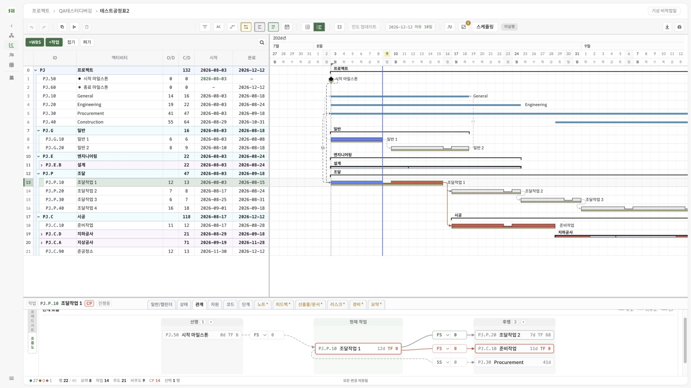
- 1 Flow — 관계 흐름 보기로 전환합니다.
- 2 선행 — 현재 Activity보다 앞의 작업입니다.
- 3 현재 — 관계 확인의 기준 Activity입니다.
- 4 후행 — 현재 Activity 뒤에 연결된 작업입니다.
- 5 선행 관계 조건 — 선행 작업에서 현재 Activity로 이어지는 관계 유형과 Lag입니다.
- 6 후행 관계 조건 — 현재 Activity에서 각 후행 작업으로 이어지는 관계 유형과 Lag입니다.
| 표시 | 의미 |
|---|---|
| 실선 | 일정 결과에서 Driving으로 판정된 관계 |
| 점선 | 일정 결과에서 Non-driving으로 판정된 관계 |
| CP 표시 | 스케줄링 후 Critical Path에 포함된 작업 또는 관계 |
7.14 관계 검증과 차단 조건
관계를 추가하거나 수정할 때 화면에서 즉시 차단되는 항목과, 검증 패널에서 경고로 확인하는 항목이 있습니다.
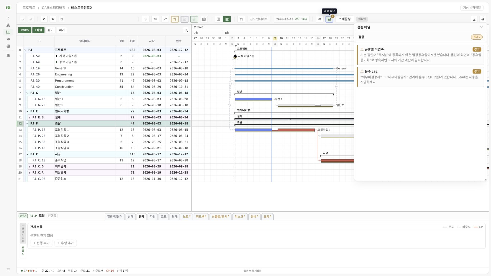
- 1 검증 — 공정표 검증 결과를 엽니다.
- 2 검증 패널 — 오류와 경고 항목을 확인합니다.
- 3 관계 경고 — 음수 Lag 등 확인이 필요한 관계입니다.
| 항목 | 동작 |
|---|---|
| 자기 자신과 연결 | 관계 생성을 차단합니다. |
| 같은 관계 중복 | 중복 추가를 차단합니다. |
| 순환 관계 | 작업 흐름이 원으로 이어지므로 생성을 차단합니다. |
| 다른 공정표의 Activity | 현재 공정표 범위 밖의 관계 생성을 차단합니다. |
| 음수 Lag | Lead 사용 여부를 검증 경고로 확인합니다. |
7.15 저장과 결과 확인
- Grid 또는 Flow에서 선행·후행 방향을 다시 확인합니다.
- Gantt 관계선과 Type·Lag가 의도한 값인지 확인합니다.
- 상단 공통 저장을 실행합니다.
- 화면 아래의 모든 변경 저장됨 상태를 확인합니다.
8마일스톤
이 장에서는 공정표의 시작·종료 마일스톤과 바 마일스톤(LOE)을 만들고, 날짜·관계·달성 상태를 확인하는 방법을 설명합니다. Contech-X의 일반 마일스톤은 기간이 0인 시점 Activity이며, Gantt에서는 ◆ 표식으로 구분됩니다.
8.1 마일스톤의 목적과 일반 작업과의 차이
마일스톤은 프로젝트 착수, 설계 승인, 주요 공정 완료, 검측·인계처럼 일정에서 반드시 확인해야 할 기준 시점을 표시합니다. 일반 작업처럼 여러 날을 차지하지 않으며, 관계를 통해 앞뒤 Activity의 일정 흐름에 포함됩니다.
| 구분 | 일반 작업 | 시작·종료 마일스톤 | 바 마일스톤(LOE) |
|---|---|---|---|
| 기간 | 1일 이상 | 0일 | SS·FF 관계에서 자동 산정 |
| 캘린더 | 선택 가능 | 적용하지 않음 | 적용하지 않음 |
| 진척 | 기간·물량 등 산정방식에 따라 입력 | 미달성 0% / 달성 100% | Data Date 위치에서 자동 계산 |
8.2 시작·종료 마일스톤 유형과 명칭
| 화면 명칭 | 기준 날짜 | 사용 예 |
|---|---|---|
| 시작 마일스톤 | 계획 시작일 또는 실제 시작일 | 프로젝트 착수, 공종 착수, 승인 개시 |
| 종료 마일스톤 | 계획 완료일 또는 실제 완료일 | 공종 완료, 검측, 인계, 준공 기준 |
| 바 마일스톤(LOE) | SS 선행 관계의 시작점부터 FF 선행 관계의 완료점 | 관리·지원처럼 다른 Activity 기간을 따라가는 작업 |
8.3 Grid·Gantt·WBS에서 마일스톤 식별
공정표 Grid에서 Activity 이름 앞의 ◆, O/D와 C/D의 0, 시작 또는 완료 한쪽에만 표시되는 날짜를 확인합니다. Gantt에서는 같은 행의 다이아몬드 표식으로 위치를 확인합니다.
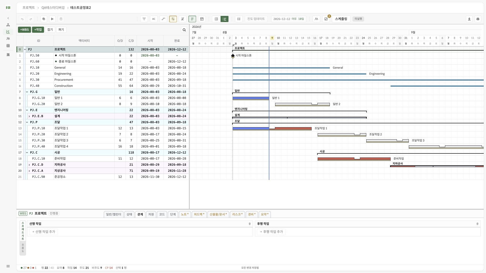
- 1 마일스톤 행 — 이름 앞의 ◆와 시작·종료 날짜를 확인합니다.
- 2 Gantt 표식 — 기간 바 대신 다이아몬드로 표시됩니다.
- 3 기간 0 — O/D와 C/D가 모두 0인지 확인합니다.
8.4 +작업에서 새 마일스톤 만들기
상단의 +작업은 일반 작업을 즉시 추가합니다. 추가된 행의 이름과 위치를 정한 뒤 우클릭하여 마일스톤으로 전환합니다. 전환된 첫 행은 시작 마일스톤이 되며, 필요한 경우 날짜 기준을 종료로 바꿉니다.
- +작업을 선택해 일반 작업을 추가합니다.
- 새 행의 ID와 이름을 입력하고 배치할 WBS를 확인합니다.
- 행을 우클릭하고 마일스톤으로 전환을 선택합니다.
- 산정방식 열에서 시작 또는 종료 기준을 확인하고 날짜를 입력합니다.
8.5 WBS의 시작·종료 마일스톤 일괄 생성
WBS를 우클릭하고 시작/종료 마일스톤 생성을 선택하면 해당 WBS 하위 Activity의 가장 이른 시작과 가장 늦은 완료를 기준으로 두 마일스톤이 함께 추가됩니다.
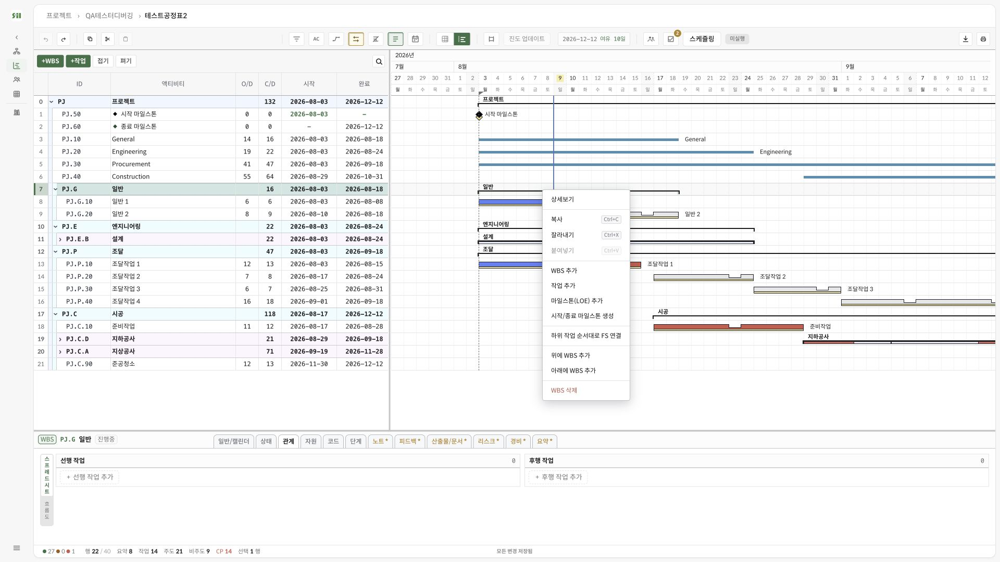
- 1 대상 WBS — 하위 Activity의 경계를 집계할 WBS입니다.
- 2 마일스톤(LOE) 추가 — 바 마일스톤을 한 행 추가합니다.
- 3 시작/종료 마일스톤 생성 — 0일 마일스톤 두 개를 만듭니다.
8.6 일반 작업을 마일스톤으로 전환
기존 작업의 이름과 관계를 유지한 채 기간 0의 마일스톤으로 바꿀 때 우클릭 메뉴의 마일스톤으로 전환을 사용합니다. 다시 일반 작업으로 바꾸면 1일 작업으로 시작하므로 기간을 재확인해야 합니다.
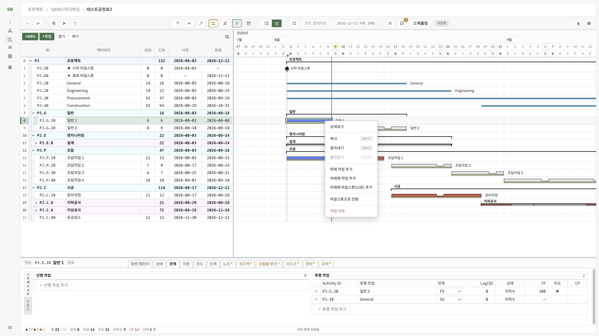
- 1 선택 작업 — 전환할 일반 Activity입니다.
- 2 마일스톤으로 전환 — 기간을 0으로 바꿉니다.
- 3 LOE 추가 — 현재 작업 아래에 바 마일스톤을 추가합니다.
8.7 다중 선택 전환과 행 순서 규칙
Command(macOS) 또는 Ctrl(Windows·Linux), Shift로 여러 일반 작업을 선택한 뒤 마일스톤으로 전환할 수 있습니다. 선택된 행은 화면의 위쪽부터 처리되며 첫 작업은 시작 마일스톤, 나머지는 종료 마일스톤으로 변환됩니다.
8.8 계획일·기간 0·캘린더 미적용 원칙
| 항목 | 시작 마일스톤 | 종료 마일스톤 |
|---|---|---|
| 사용 날짜 | 계획 시작 / 실제 시작 | 계획 완료 / 실제 완료 |
| O/D·C/D | 0 | 0 |
| 캘린더 | 선택하지 않음 | 선택하지 않음 |
| 달성 전 진척 | 0% | 0% |
8.9 마일스톤 날짜 수정
- Grid에서 대상 마일스톤 행을 선택합니다.
- 시작 마일스톤은 시작, 종료 마일스톤은 완료 날짜를 수정합니다.
- 관계가 연결된 경우 10장의 절차에 따라 다시 스케쥴링합니다.
- Gantt의 ◆ 위치와 계획일이 일치하는지 확인합니다.
8.10 선행·후행 관계 연결
마일스톤도 일반 Activity와 같은 방식으로 관계 탭이나 Gantt 연결점을 사용해 선행·후행 관계를 연결합니다. 관계 유형과 Lag의 입력·수정·삭제는 7. 작업간 관계설정을 따릅니다.
| 확인 항목 | 기준 |
|---|---|
| 시작 마일스톤 | 후행 작업의 시작 흐름을 여는 관계가 있는지 확인합니다. |
| 종료 마일스톤 | 선행 작업의 완료 흐름을 받는 관계가 있는지 확인합니다. |
| 고립 마일스톤 | 선행과 후행이 모두 없으면 검증에서 경고 대상으로 확인합니다. |
8.11 마일스톤 고정·고정 해제와 달성 처리
마일스톤의 고정은 단순 화면 잠금이 아니라 실제 날짜를 기록해 달성 상태로 만드는 기능입니다. 달성된 마일스톤은 진척률 100%로 표시되며, 우클릭 메뉴에서 고정을 해제할 수 있습니다.
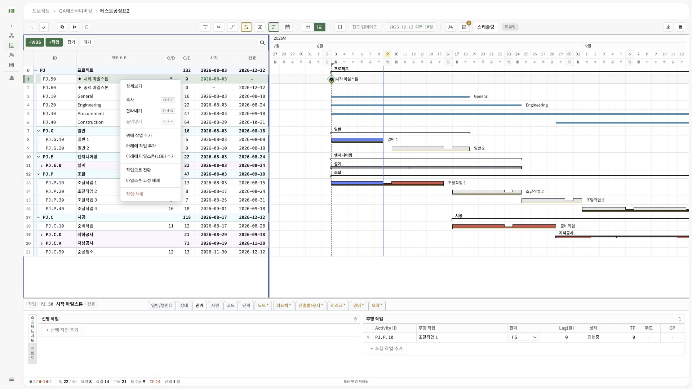
- 1 고정 마일스톤 — 실제 날짜가 기록된 완료 상태입니다.
- 2 마일스톤 고정 해제 — 실제 날짜와 달성 상태를 해제합니다.
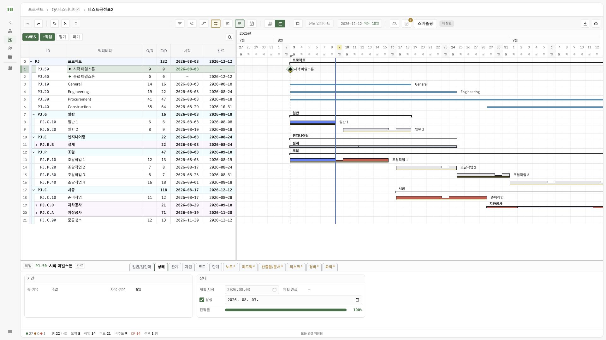
- 1 대상 행 — 달성 상태를 확인할 마일스톤입니다.
- 2 상태 — 마일스톤 실적 정보를 여는 탭입니다.
- 3 달성일 — 체크와 함께 실제 날짜를 기록합니다.
- 4 진척률 — 달성 시 100%로 자동 표시됩니다.
8.12 바 마일스톤(LOE)의 기간과 자동 진척
바 마일스톤(LOE)은 일반 0일 마일스톤과 다릅니다. SS 선행 관계의 시작점과 FF 선행 관계의 완료점을 따라 기간이 정해지며, Data Date가 그 기간에서 차지하는 위치에 따라 진척률이 자동 계산됩니다.
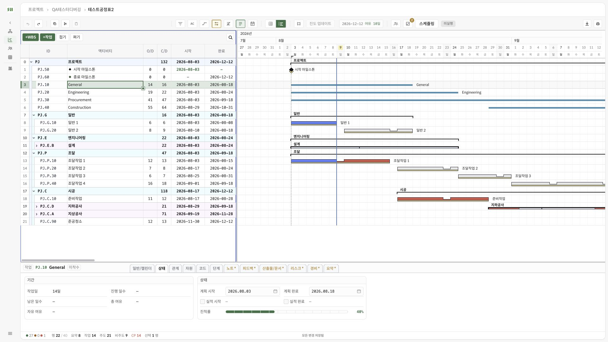
- 1 LOE 행 — 기간 바와 함께 표시되는 바 마일스톤입니다.
- 2 계획기간 — SS·FF 관계 결과로 시작·완료가 정해집니다.
- 3 실적 입력 — 직접 입력하지 않도록 비활성화됩니다.
- 4 자동 진척 — Data Date 기준으로 계산된 값입니다.
8.13 검증 패널의 날짜·기간·관계 확인
상단의 검증 패널을 열어 마일스톤 오류와 경고를 확인합니다. 관계를 바꾸거나 마일스톤을 전환한 뒤에는 저장 전과 스케쥴링 후 각각 한 번씩 확인합니다.
| 검증 항목 | 정상 기준 |
|---|---|
| 계획 날짜 | 유형에 맞는 계획 시작 또는 계획 완료 날짜가 있습니다. |
| 기간 | 시작·종료 마일스톤의 기간이 0입니다. |
| 관계 | 필요한 선행·후행이 연결되고 고립 경고가 없습니다. |
| LOE 관계 | 기간을 정할 SS와 FF 관계가 연결되어 있습니다. |
| 달성 상태 | 실제 날짜와 0%·100% 진척 표시가 서로 일치합니다. |
8.14 마일스톤 설정 완료 기준
- 시작·종료 유형과 이름이 실제 관리 기준을 나타냅니다.
- O/D와 C/D가 0이고 유형에 맞는 계획 날짜가 있습니다.
- 필요한 선행·후행 관계와 LOE의 SS·FF 관계가 연결되어 있습니다.
- 달성된 마일스톤에는 올바른 실제 날짜와 100%가 표시됩니다.
- 스케쥴링 후 Gantt 위치와 검증 결과를 확인했습니다.
- 화면 아래에 모든 변경 저장됨이 표시됩니다.
9캘린더 및 기상가동률
캘린더는 작업일과 휴무일을 정하는 기준입니다. 같은 기간 5일 작업과 6일 작업은 종료일이 달라지므로, Activity 성격에 맞는 캘린더를 지정해야 합니다.
- 현장 기본 작업일과 휴무일을 먼저 설정합니다.
- 특정 공종이나 작업 조건이 다르면 별도 캘린더를 만듭니다.
- Activity에 알맞은 캘린더를 지정합니다.
- 스케쥴링 후 종료일이 의도와 맞는지 검증합니다.
10CPM 스케쥴링
스케쥴링은 작업 기간, 캘린더, 선후행 관계를 계산해 전체 일정표를 다시 배치하는 기능입니다. 관계가 누락되면 계산 결과가 실제 흐름과 달라질 수 있습니다.

Critical Path
프로젝트 종료일을 직접 결정하는 작업 흐름입니다.
Float / FT
전체 종료일을 늦추지 않고 작업이 움직일 수 있는 여유일입니다.
11베이스라인 & 업데이트 개발중
베이스라인은 검토가 끝난 공정표의 계획 상태를 저장해 이후 현재 계획 및 실적과 비교하는 기준입니다. 공정표를 변경하기 전에 베이스라인을 만들면 시작일·완료일과 일정 차이를 기준 계획과 비교할 수 있습니다.
사용 순서
- 공정표 저장·검증
- 베이스라인 추가
- Primary 배정 확인
- 기준 막대·편차 확인
1. 베이스라인 관리 열기
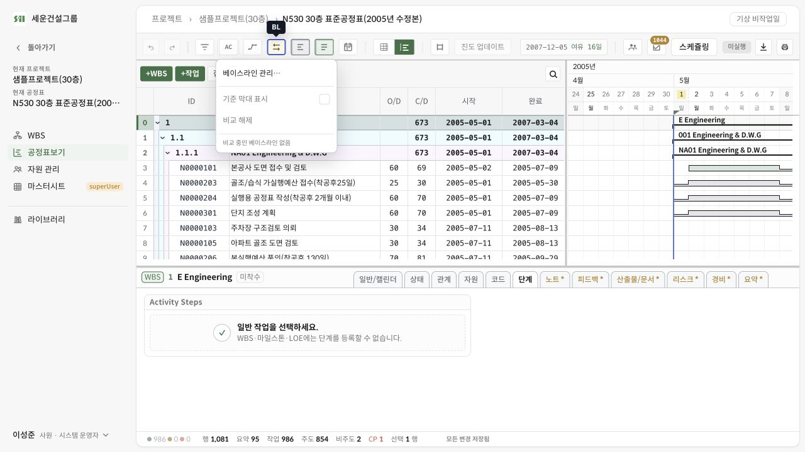
- 1상단 도구모음의 BL(베이스라인) 버튼을 누릅니다.
- 2베이스라인 관리…를 선택합니다.
2. 현재 공정표를 베이스라인으로 저장
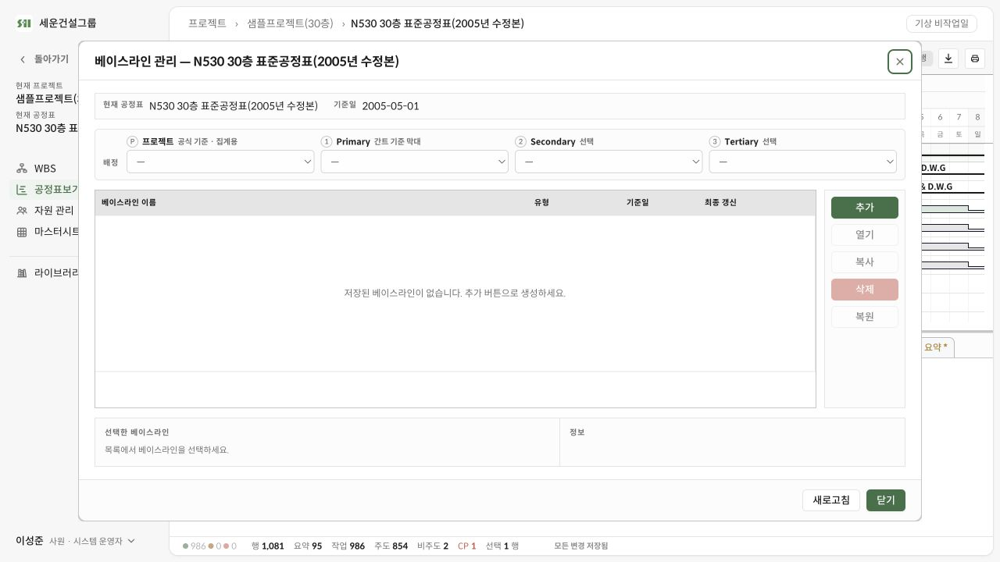
- 1현재 공정표 이름과 기준일이 맞는지 확인합니다.
- 2Project·Primary·Secondary·Tertiary의 현재 배정 상태를 확인합니다.
- 3목록이 비어 있으면 추가를 누릅니다.
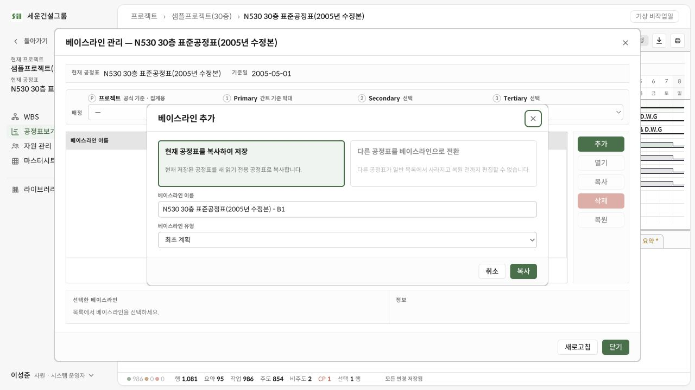
- 1현재 공정표를 복사하여 저장: 지금 저장된 공정표를 읽기 전용 기준 계획으로 보존합니다.
- 2다른 공정표를 베이스라인으로 전환: 대상 공정표가 있을 때만 선택할 수 있으며, 복원 전까지 일반 공정표 목록에서 숨겨집니다.
- 3구분하기 쉬운 베이스라인 이름과 최초 계획·관리 기준·What-if 등의 유형을 지정합니다.
- 4복사를 누릅니다. 생성된 베이스라인은 Primary에 자동 배정됩니다.
3. 생성 결과와 배정 확인
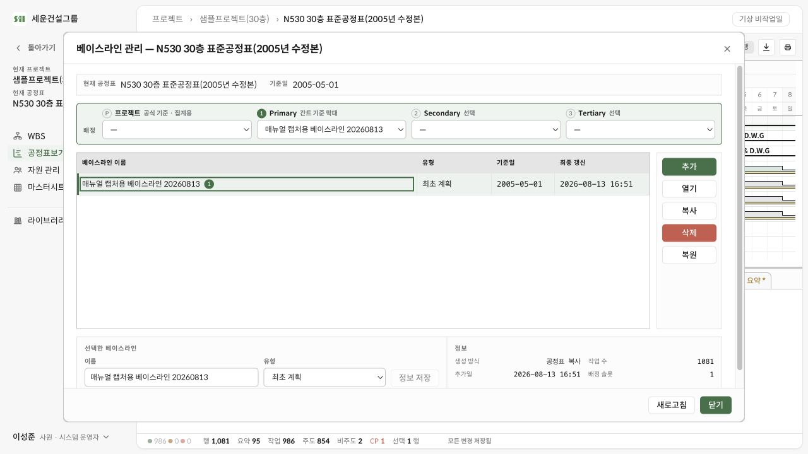
- 1Primary에 새 베이스라인이 배정됐는지 확인합니다. 슬롯 드롭다운을 바꾸면 즉시 저장됩니다.
- 2목록 행의 1 배지는 해당 베이스라인이 Primary 슬롯에 배정됐다는 뜻입니다.
- 3선택한 베이스라인을 열기·복사·삭제·복원할 수 있습니다.
- 4이름과 유형을 수정한 뒤 정보 저장을 누르고, 생성 방식·작업 수·추가일·배정 슬롯을 확인합니다.
배정 슬롯의 의미
- 프로젝트: 프로젝트의 공식 기준 및 집계에 사용할 베이스라인
- Primary: 현재 공정표의 간트 기준 막대와 비교 컬럼에 사용할 베이스라인
- Secondary / Tertiary: 추가 비교 기준을 보관하는 선택 슬롯
- —: 해당 슬롯의 배정을 해제
4. 기준 막대와 일정 차이 확인
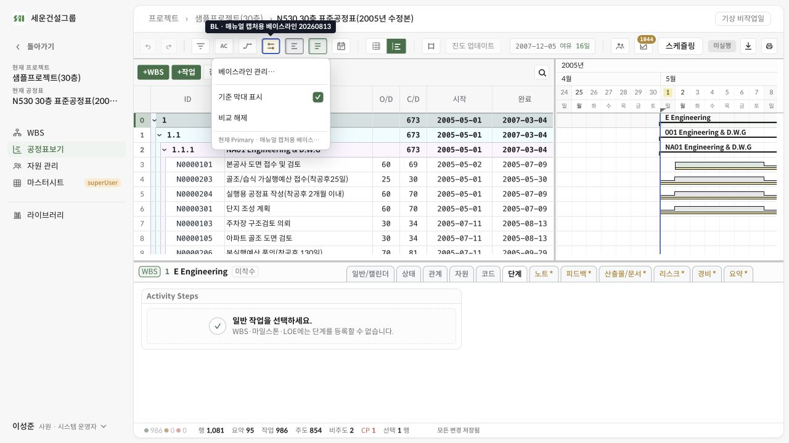
- 1BL 버튼에 마우스를 올리면 현재 Primary 이름이 표시됩니다.
- 2기준 막대 표시의 체크로 간트 기준 막대를 켜고 끕니다. 비교 해제는 Primary 배정을 제거합니다.
- 3간트에서 현재 막대와 기준 막대를 비교합니다. 생성 직후에는 날짜가 같아 두 막대가 겹쳐 보입니다.
| 확인 위치 | 의미 |
|---|---|
| BL TF | 베이스라인 저장 당시 일정과 관계로 계산한 Total Float |
| 기준 시작 / 기준 완료 | Primary 베이스라인에 저장된 시작일과 완료일 |
| 기준 차이 | 현재 완료일과 기준 완료일의 차이. 양수는 기준보다 늦고, 음수는 빠르며, 0일은 동일 |
| 간트 기준 막대 | 현재 막대와 기준 계획을 시각적으로 비교. 날짜가 같으면 서로 겹침 |
관리 기능
| 기능 | 동작 | 주의사항 |
|---|---|---|
| 열기 | 선택한 베이스라인을 읽기 전용 공정표로 확인 | 기준 계획을 직접 수정하지 않음 |
| 복사 | 선택한 베이스라인의 복사본 생성 | 저장되지 않은 현재 공정표 변경이 있으면 제한됨 |
| 삭제 | 선택한 베이스라인을 영구 삭제 | 비교 중인 베이스라인이면 Primary 비교도 함께 해제됨 |
| 복원 | 베이스라인을 편집 가능한 공정표로 되돌림 | 복원 후 베이스라인 관리 목록에서 사라짐 |
12공정표 편의기능
작업(Activity) 상세기능 개발중
Activity별 작업명, 기간, 담당자, 캘린더, 관계, 자원 정보를 세부 설정합니다. 상세 정보가 정확할수록 스케쥴링과 실적 분석 품질이 좋아집니다.
필터링 기능 개발중
공종, 담당자, 기간, 지연 여부, Critical 여부 등 조건으로 작업을 좁혀 필요한 작업만 빠르게 확인합니다.
- 기간 필터: 이번 주, 이번 달, 지정 시작일/종료일 범위 작업만 표시
- WBS 필터: 선택한 WBS 노드와 하위 작업만 표시
- 키워드 필터: 작업명, 코드, 담당자 등 텍스트 조건으로 검색
O/D 일수고정, 계산일수
O/D는 Original Duration, 최초 계획 기간입니다. 일수고정은 사용자가 입력한 기간을 유지하는 방식이고, 계산일수는 캘린더와 관계를 반영해 시스템이 산정하는 기간입니다.
13PDF 출력
PDF 출력은 공정표의 WBS 시트와 간트를 출력용 문서로 구성한 뒤 프린터로 인쇄하거나 PDF 파일로 저장하는 기능입니다. 출력 옵션을 정한 다음 앱 내부 미리보기에서 제목과 표시 문구를 다듬고, 마지막에 브라우저 인쇄 창을 사용합니다.
사용 순서
- PDF 출력 열기
- 출력 옵션 설정
- 미리보기 편집·확인
- 인쇄 또는 PDF 저장
1. PDF 출력 열기
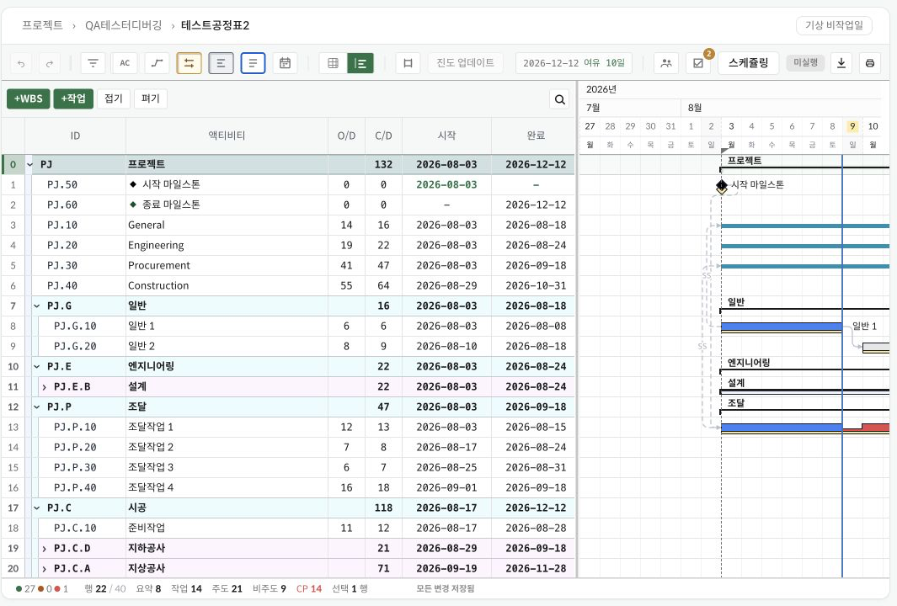
- 1상단 도구모음의 PDF 출력 버튼을 누릅니다.
2. 출력 옵션 설정
- 1용지·행 높이·배율을 정합니다. 기본 권장값은 A3 가로, 보통, 100%입니다.
- 2타임스케일을 정합니다. 자동은 전체 기간을 한 페이지 폭에 맞추고, 월·주·일은 고정 눈금을 사용합니다.
- 3출력 기간을 직접 지정하거나 전체 기간을 선택합니다.
- 4WBS 범위와 펼침 수준을 정합니다. 전체 공정 또는 특정 WBS 하위만 출력할 수 있습니다.
- 5시트 컬럼과 의존관계 연결선 표시 여부를 선택합니다. Activity 컬럼은 필수입니다.
- 6설정이 끝나면 미리보기를 누릅니다.
| 옵션 | 설정 기준 |
|---|---|
| 용지 | A3 가로 또는 A4 가로. 넓은 간트와 여러 컬럼은 A3 가로를 권장 |
| 행 높이·배율 | 행이 많으면 압축 또는 낮은 배율을 사용. 한 페이지에 더 많이 표시되지만 글자도 작아짐 |
| 타임스케일 | 자동은 전체 기간을 한 페이지 폭에 맞춤. 월·주·일은 기간이 길면 가로 페이지가 추가됨 |
| 출력 기간 | 보고 대상 기간만 지정하거나 전체 기간 선택 |
| WBS 범위·펼침 | 전체 공정 또는 선택 WBS 하위와 화면 그대로·1~4단계·전체 펼침 중 선택 |
| 시트 컬럼 | 보고서에 필요한 컬럼만 선택. Activity 컬럼은 항상 포함 |
| 의존관계 연결선 | 작업 관계를 함께 확인할 때 사용. 기간과 작업이 많으면 선이 복잡해질 수 있음 |
3. 앱 내부 편집 미리보기
미리보기는 실제 인쇄 페이지와 같은 구조로 표시됩니다. 점선 테두리가 있는 글자를 클릭하면 이번 출력에 사용할 문구를 직접 수정할 수 있습니다.
- 1점선으로 표시된 문서 제목과 공정표 부제목을 클릭해 출력용 문구를 수정합니다.
- 2초기화는 진입 시 문구로 되돌리고, 닫기는 원본을 바꾸지 않고 미리보기를 종료하며, 인쇄는 브라우저 인쇄 창을 엽니다.
- 1문서 제목을 바꾸면 표지와 각 본문 페이지의 제목에 함께 반영됩니다.
- 2컬럼 제목을 보고서 용어에 맞게 수정할 수 있습니다.
- 3Activity 이름을 수정하면 같은 행의 시트와 간트 막대 문구에 함께 반영됩니다.
| 편집 가능 | 편집되지 않는 원본 정보 |
|---|---|
| 문서 제목, 공정표 부제목 | WBS 계층과 행 순서 |
| 시트 컬럼 제목 | 시작일·완료일·기간·진척률 |
| 출력용 Activity 이름 | 캘린더·베이스라인·작업 관계와 간트 형상 |
4. 브라우저에서 인쇄 또는 PDF 저장
- 앱 내부 미리보기 오른쪽 위의 인쇄를 누릅니다.
- 브라우저 인쇄 창의 대상에서 프린터 또는 PDF로 저장을 선택합니다.
- 앱에서 선택한 A3/A4와 같은 용지 크기 및 가로 방향인지 확인합니다.
- 필요하면 브라우저의 머리글·바닥글을 끄고 최종 미리보기를 확인한 뒤 인쇄하거나 저장합니다.
출력 페이지 구성
- 첫 페이지에는 문서 제목, 공정표 이름, 공정 기간, Data Date와 출력일이 표시됩니다.
- 본문 페이지에는 선택한 WBS 시트와 간트가 함께 표시되고 페이지마다 헤더가 반복됩니다.
- 행이 많으면 세로 페이지가 추가되고, 고정 타임스케일의 기간이 길면 가로 페이지도 추가됩니다.
14자원관리 개발중
자원은 작업을 실제로 수행하는 인력, 장비, 자재입니다. 공정표가 “언제”를 다룬다면 자원관리는 “무엇으로”를 붙이는 단계입니다. 작업에 자원을 배정하면 일정이 물리적으로 가능한지, 비용이 얼마나 드는지 판단할 수 있습니다.
자원 유형과 수량의 의미
자원은 인력, 장비, 자재 세 유형으로 나뉩니다. 세 유형은 같은 “수량” 칸을 쓰지만 의미가 서로 다르므로, 이 차이를 먼저 잡아야 원가와 부하가 맞게 계산됩니다.
인력
수량은 투입 인원(명)이고 단가는 1일 단가입니다. 원가는 단가 × 인원 × 기간(일).
장비
수량은 투입 대수(대)이고 단가는 1일 단가입니다. 원가는 단가 × 대수 × 기간(일).
자재
수량은 총 물량이고 단가는 단위당 단가입니다. 원가는 단가 × 물량이며 기간과 무관합니다.
자원 사전과 RBS
자원은 전사 단위로 한 번 등록해 두고 프로젝트에서 가져다 씁니다. 현장마다 같은 직종과 장비를 다시 만들지 않아도 되고, 단가와 생산성 기준을 회사 차원에서 통일할 수 있습니다.
투입률과 부하
- 기본 단위/일: 평상시 하루에 투입하는 양입니다. 작업에 수량을 따로 입력하지 않으면 이 값이 기본값으로 쓰입니다.
- 최대 단위/일: 하루에 투입할 수 있는 상한입니다. 보유 인원이나 장비 대수가 여기 해당합니다.
- 부하율: 그날의 수요 ÷ 최대 단위/일. 1을 넘으면 동시 투입이 보유량을 넘었다는 뜻입니다. 최대 단위/일을 비워 두면 초과 여부를 판정할 수 없어 수요만 표시됩니다.
자원마다 캘린더를 따로 지정할 수 있습니다. 지정하지 않으면 프로젝트 기본 캘린더를 따르며, 비작업일에는 수요가 잡히지 않습니다.
15자원 실적입력 개발중
자원 실적입력은 계획한 투입량 대비 실제로 들어간 인력, 장비, 자재를 자원 단위로 기록하는 기능입니다. 작업이 며칠 걸렸는지가 아니라, 그 작업에 몇 명이 며칠 붙었는지를 남기는 것이 목적입니다.
왜 필요한가
생산성 실측
실제 물량 ÷ 실제 투입량으로 현장의 실제 생산성이 나옵니다. 이 값이 쌓이면 표준 생산성 기준을 현장 실적으로 보정할 수 있습니다.
실제원가
실제 투입량 × 단가로 실제원가가 집계됩니다. 성과 분석(16장)의 원가 축은 이 값이 있어야 성립합니다.
16S-Curve 개발중
일정만 보면 “늦었는지”는 알아도 “얼마나 손해인지”는 모릅니다. EVMS는 일정과 비용을 같은 단위로 환산해 한 화면에서 비교하는 방식이고, S-Curve는 그 값을 시간축에 누적해 그린 그림입니다.
EVMS의 세 값
- 일정 차이(SV) = EV − PV — 음수면 계획보다 덜 끝냈다는 뜻입니다.
- 원가 차이(CV) = EV − AC — 음수면 한 일에 비해 돈이 더 들었다는 뜻입니다.
EV와 AC를 나눠 보는 이유는, 늦은 것과 비싼 것이 다른 문제이기 때문입니다. 일정만 보면 둘을 구분할 수 없습니다.
S-Curve
17공정 라이브러리 편집 개발중
현장은 달라도 공정의 뼈대와 생산성 기준은 반복됩니다. 공정 라이브러리는 그 반복되는 부분을 표준으로 저장해 두고 새 공정표에 가져다 쓰는 곳입니다. 매번 처음부터 만들지 않으니 작성 시간이 줄고, 현장마다 다르게 잡히던 기간 산정 기준이 통일됩니다.
표준공정
생산성 기준
공정 항목마다 기간을 계산하는 근거를 함께 저장합니다. 물량만 넣으면 기간과 표준 투입이 따라 나오게 하는 것이 목적입니다.
단위와 인당생산성
산정 단위(㎡, ㎥, TON 등)와 1인이 하루에 처리하는 양입니다. 물량을 기간으로 바꾸는 기준값입니다.
대당능력·장비당 인원
장비 1대의 1일 처리량과 그 장비에 붙는 인원입니다. 장비가 속도를 정하는 공정에 씁니다.
순작업일과 간접일
실제 작업에 걸리는 일수와 양생·검측처럼 작업은 없지만 기다려야 하는 일수입니다. 둘을 나눠 두면 물량이 바뀔 때 순작업일만 움직입니다.
표준 자원
항목에 붙는 직종 자원과 표준 인원, 장비 자원과 표준 대수입니다. 적용과 동시에 자원 배정까지 따라옵니다.
함께 관리되는 표준
- 자원 라이브러리: 전사 단위로 등록해 프로젝트마다 가져다 쓰는 인력·장비·자재 목록입니다(14장).
- 견적 항목 카탈로그: 공정 항목과 물량 산출 기준을 코드 체계로 정리한 목록입니다.